Chapter 9: Linear Momentum and Collisions¶
Introduction¶
The concepts of work, energy, and the work-energy theorem are valuable for two primary reasons: First, they are powerful computational tools, making it much easier to analyze complex physical systems than is possible using Newton’s laws directly (for example, systems with nonconstant forces); and second, the observation that the total energy of a closed system is conserved means that the system can only evolve in ways that are consistent with energy conservation. In other words, a system cannot evolve randomly; it can only change in ways that conserve energy.
In this chapter, we develop and define another conserved quantity, called linear momentum, and another relationship (the impulse-momentum theorem), which will put an additional constraint on how a system evolves in time. Conservation of momentum is useful for understanding collisions, such as that shown in the above image. It is just as powerful, just as important, and just as useful as conservation of energy and the work-energy theorem.
9.1 Linear Momentum¶
Learning Objectives
By the end of this section, you will be able to:
- Explain what momentum is, physically
- Calculate the momentum of a moving object
Our study of kinetic energy showed that a complete understanding of an object’s motion must include both its mass and its velocity (\(K=(1\text{/}2)mv^{2}\)). However, as powerful as this concept is, it does not include any information about the direction of the moving object’s velocity vector. We’ll now define a physical quantity that includes direction.
Like kinetic energy, this quantity includes both mass and velocity; like kinetic energy, it is a way of characterizing the “quantity of motion” of an object. It is given the name momentum (from the Latin word movimentum, meaning “movement”), and it is represented by the symbol p.
Momentum
The momentum p of an object is the product of its mass and its velocity:
As shown in Figure 9.2, momentum is a vector quantity (since velocity is). This is one of the things that makes momentum useful and not a duplication of kinetic energy. It is perhaps most useful when determining whether an object’s motion is difficult to change (Figure 9.3) or easy to change (Figure 9.4) over a short time interval.
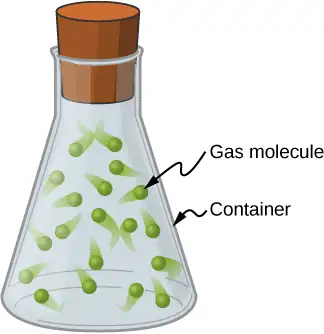
Unlike kinetic energy, momentum depends equally on an object’s mass and velocity. For example, as you will learn when you study thermodynamics, the average speed of an air molecule at room temperature is approximately 500 m/s, with an average molecular mass of \(6\:\times\:{10}^{-25}\:\text{kg}\); its momentum is thus
For comparison, a typical automobile might have a speed of only 15 m/s, but a mass of 1400 kg, giving it a momentum of
These momenta are different by 27 orders of magnitude, or a factor of a billion billion billion!
9.2 Impulse and Collisions¶
Learning Objectives
By the end of this section, you will be able to:
- Explain what an impulse is, physically
- Describe what an impulse does
- Relate impulses to collisions
- Apply the impulse-momentum theorem to solve problems
We have defined momentum to be the product of mass and velocity. Therefore, if an object’s velocity should change (due to the application of a force on the object), then necessarily, its momentum changes as well. This indicates a connection between momentum and force. The purpose of this section is to explore and describe that connection.
Suppose you apply a force on a free object for some amount of time. Clearly, the larger the force, the larger the object’s change of momentum will be. Alternatively, the more time you spend applying this force, again the larger the change of momentum will be, as depicted in Figure 9.5. The amount by which the object’s motion changes is therefore proportional to the magnitude of the force, and also to the time interval over which the force is applied.
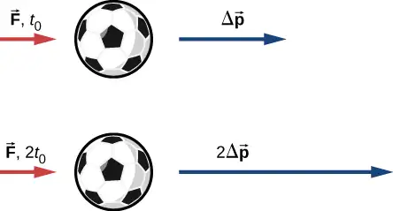
Mathematically, if a quantity is proportional to two (or more) things, then it is proportional to the product of those things. The product of a force and a time interval (over which that force acts) is called impulse, and is given the symbol \(\mathbf{\vec{J}}.\)
Impulse
Let \(\mathbf{\vec{F}}(t)\) be the force applied to an object over some differential time interval dt (Figure 9.6). The resulting impulse on the object is defined as
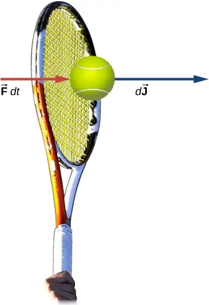
The total impulse over the interval \(t_{\text{f}}-t_{\text{i}}\) is
equation callout
Equation 9.2 and Equation 9.3 together say that when a force is applied for an infinitesimal time interval dt, it causes an infinitesimal impulse \(d\mathbf{\vec{J}}\), and the total impulse given to the object is defined to be the sum (integral) of all these infinitesimal impulses.
To calculate the impulse using Equation 9.3, we need to know the force function F(t), which we often don’t. However, a result from calculus is useful here: Recall that the average value of a function over some interval is calculated by
where \(\Delta x=x_{\text{f}}-x_{\text{i}}\). Applying this to the time-dependent force function, we obtain
Therefore, from Equation 9.3,
equation callout
The idea here is that you can calculate the impulse on the object even if you don’t know the details of the force as a function of time; you only need the average force. In fact, though, the process is usually reversed: You determine the impulse (by measurement or calculation) and then calculate the average force that caused that impulse.
To calculate the impulse, a useful result follows from writing the force in Equation 9.3 as \(\mathbf{\vec{F}}(t)=m\mathbf{\vec{a}}(t)\):
For a constant force \({\mathbf{\vec{F}}}_{\text{ave}}=\mathbf{\vec{F}}=m\mathbf{\vec{a}}\), this simplifies to
That is,
Note that the integral form, Equation 9.3, applies to constant forces as well; in that case, since the force is independent of time, it comes out of the integral, which can then be trivially evaluated.
Example 9.1 The Arizona Meteor Crater
Approximately 50,000 years ago, a large (radius of 25 m) iron-nickel meteorite collided with Earth at an estimated speed of \(1.28\:\times\:{10}^{4}\:\text{m/s}\) in what is now the northern Arizona desert, in the United States. The impact produced a crater that is still visible today (Figure 9.7); it is approximately 1200 m (three-quarters of a mile) in diameter, 170 m deep, and has a rim that rises 45 m above the surrounding desert plain. Iron-nickel meteorites typically have a density of \(\rho=7970{\:\text{kg/m}}^{3}\). Use impulse considerations to estimate the average force and the maximum force that the meteor applied to Earth during the impact.
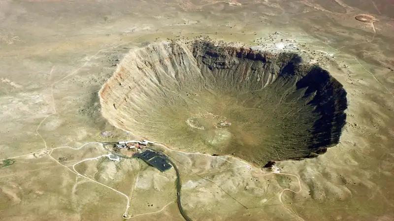
Strategy
It is conceptually easier to reverse the question and calculate the force that Earth applied on the meteor in order to stop it. Therefore, we’ll calculate the force on the meteor and then use Newton’s third law to argue that the force from the meteor on Earth was equal in magnitude and opposite in direction.
Using the given data about the meteor, and making reasonable guesses about the shape of the meteor and impact time, we first calculate the impulse using Equation 9.6. We then use the relationship between force and impulse Equation 9.5 to estimate the average force during impact. Next, we choose a reasonable force function for the impact event, calculate the average value of that function Equation 9.4, and set the resulting expression equal to the calculated average force. This enables us to solve for the maximum force.
Solution
Define upward to be the +y-direction. For simplicity, assume the meteor is traveling vertically downward prior to impact. In that case, its initial velocity is \({\mathbf{\vec{v}}}_{\text{i}}=-v_{\text{i}}\mathbf{\hat{j}}\), and the force Earth exerts on the meteor points upward, \(\mathbf{\vec{F}}(t)=+F(t)\mathbf{\hat{j}}\). The situation at \(t=0\) is depicted below.
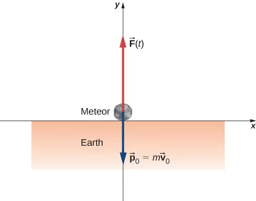
The average force during the impact is related to the impulse by
From Equation 9.6, \(\mathbf{\vec{J}}=m\Delta\mathbf{\vec{v}}\), so we have
The mass is equal to the product of the meteor’s density and its volume:
If we assume (guess) that the meteor was roughly spherical, we have
Thus we obtain
The problem says the velocity at impact was \(-1.28\:\times\:{10}^{4}\:\text{m/s}\mathbf{\hat{j}}\) (the final velocity is zero); also, we guess that the primary impact lasted about \(t_{\max}=2\:\text{s}\). Substituting these values gives
This is the average force applied during the collision. Notice that this force vector points in the same direction as the change of velocity vector \(\Delta\mathbf{\vec{v}}\).
Next, we calculate the maximum force. The impulse is related to the force function by
We need to make a reasonable choice for the force as a function of time. We define \(t=0\) to be the moment the meteor first touches the ground. Then we assume the force is a maximum at impact, and rapidly drops to zero. A function that does this is
(The parameter \(\tau\) represents how rapidly the force decreases to zero.) The average force is
where \(\Delta t=t_{\max}-0\:\text{s}\). Since we already have a numeric value for \(F_{\text{ave}}\), we can use the result of the integral to obtain \(F_{\max}\).
Choosing \(\tau=\frac{1}{e}t_{\max}\) (this is a common choice, as you will see in later chapters), and guessing that \(t_{\max}=2\:\text{s}\), this integral evaluates to
Thus, the maximum force has a magnitude of
The complete force function, including the direction, is
This is the force Earth applied to the meteor; by Newton’s third law, the force the meteor applied to Earth is
which is the answer to the original question.
Significance
The graph of this function contains important information. Let’s graph (the magnitude of) both this function and the average force together (Figure 9.8).
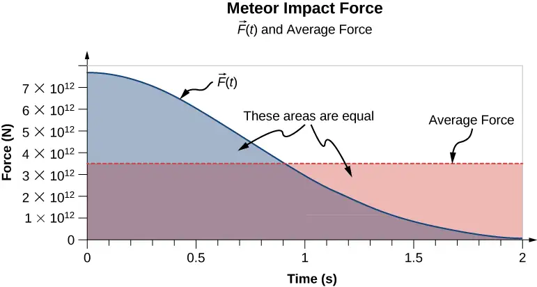
Notice that the area under each plot has been filled in. For the plot of the (constant) force \(F_{\text{ave}}\), the area is a rectangle, corresponding to \(F_{\text{ave}}\Delta t=J\). As for the plot of F(t), recall from calculus that the area under the plot of a function is numerically equal to the integral of that function, over the specified interval; so here, that is \(\displaystyle \int_{0}^{t_{\max}}F(t)dt=J\). Thus, the areas are equal, and both represent the impulse that the meteor applied to Earth during the two-second impact. The average force on Earth sounds like a huge force, and it is. Nevertheless, Earth barely noticed it. The acceleration Earth obtained was just
which is completely immeasurable. That said, the impact created seismic waves that nowadays could be detected by modern monitoring equipment.
Example 9.2 The Benefits of Impulse
A car traveling at 27 m/s collides with a building. The collision with the building causes the car to come to a stop in approximately 1 second. The driver, who weighs 860 N, is protected by a combination of a variable-tension seatbelt and an airbag (Figure 9.9). (In effect, the driver collides with the seatbelt and airbag and not with the building.) The airbag and seatbelt slow his velocity, such that he comes to a stop in approximately 2.5 s.
- What average force does the driver experience during the collision?
- Without the seatbelt and airbag, his collision time (with the steering wheel) would have been approximately 0.20 s. What force would he experience in this case?
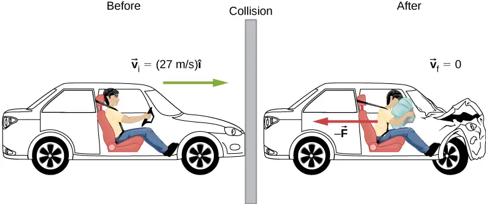
Strategy
We are given the driver’s weight, his initial and final velocities, and the time of collision; we are asked to calculate a force. Impulse seems the right way to tackle this; we can combine Equation 9.5 and Equation 9.6.
Solution
a. Define the +x-direction to be the direction the car is initially moving. We know
and
Since J is equal to both those things, they must be equal to each other:
We need to convert this weight to the equivalent mass, expressed in SI units:
Remembering that \(\Delta\mathbf{\vec{v}}={\mathbf{\vec{v}}}_{\text{f}}-{\mathbf{\vec{v}}}_{\text{i}}\), and noting that the final velocity is zero, we solve for the force:
The negative sign implies that the force slows him down. For perspective, this is about 1.1 times his own weight.
b. Same calculation, just the different time interval:
which is about 14 times his own weight. Big difference!
Significance
You see that the value of an airbag is how greatly it reduces the force on the vehicle occupants. For this reason, they have been required on all passenger vehicles in the United States since 1991, and have been commonplace throughout Europe and Asia since the mid-1990s. The change of momentum in a crash is the same, with or without an airbag; the force, however, is vastly different.
Effect of Impulse¶
Since an impulse is a force acting for some amount of time, it causes an object’s motion to change. Recall Equation 9.6:
Because \(m\mathbf{\vec{v}}\) is the momentum of a system, \(m\Delta\mathbf{\vec{v}}\) is the change of momentum \(\Delta\mathbf{\vec{p}}\). This gives us the following relation, called the impulse-momentum theorem (or relation).
Impulse-Momentum Theorem
An impulse applied to a system changes the system’s momentum, and that change of momentum is exactly equal to the impulse that was applied:
The impulse-momentum theorem is depicted graphically in Figure 9.10.
![A ball and three vector arrows are shown. The arrows are: v sub i to the right, p sub i to the right and J pointing down and to the right. This figure is labeled “Ball receives impulse.” The next figure shows the p i vector to the right and the J vector, down and to the right with its tail aligned with the tip of the p i vector. This is labeled p sub i plus J and is equal to the p sub f vector. This figure is labeled impulse is added to initial momentum. The next figure shows the J vector equals the p f vector with a vector that is the opposite of p sub i placed with its tail at the p sub f tip. The p vectors are labeled p sub f minus p sub i. This is equal to a vector identical to the J vector but labeled delta p. This figure is labeled “so change in momentum equals the impulse. The last figure shows the ball and two arrows: the p sub f vector and another vector in the same direction and labeled v sub f. This figure is labeled “after impulse ball has final momentum.”](img/cnx-uphysics-09-02-impmomth.webp)
There are two crucial concepts in the impulse-momentum theorem:
- Impulse is a vector quantity; an impulse of, say, \(-(10\:\text{N}\cdot\text{s})\mathbf{\mathbf{\hat{i}}}\) is very different from an impulse of \(+(10\:\text{N}\cdot\text{s})\mathbf{\mathbf{\hat{i}}}\); they cause completely opposite changes of momentum.
- An impulse does not cause momentum; rather, it causes a change in the momentum of an object. Thus, you must subtract the initial momentum from the final momentum, and—since momentum is also a vector quantity—you must take careful account of the signs of the momentum vectors.
The most common questions asked in relation to impulse are to calculate the applied force, or the change of velocity that occurs as a result of applying an impulse. The general approach is the same.
Problem-Solving Strategy: Impulse-Momentum Theorem
- Express the impulse as force times the relevant time interval.
- Express the impulse as the change of momentum, usually \(m\Delta v\).
- Equate these and solve for the desired quantity.
Example 9.3 Moving the Enterprise
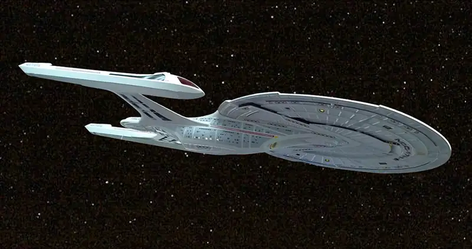
When Captain Picard commands, “Take us out,” the starship Enterprise (Figure 9.11) starts from rest to a final speed of \(v_{\text{f}}=7.5\:\times\:{10}^{7}\:\text{m/s}\). Assuming this maneuver is completed in 60 s, what average force did the impulse engines apply to the ship?
Strategy
We are asked for a force; we know the initial and final speeds (and hence the change in speed), and we know the time interval over which this all happened. In particular, we know the amount of time that the force acted. This suggests using the impulse-momentum relation. To use that, though, we need the mass of the Enterprise. An internet search gives a best estimate of the mass of the Enterprise (in the 2009 movie) as \(2\:\times\:{10}^{9}\:\text{kg}\).
Solution
Because this problem involves only one direction (i.e., the direction of the force applied by the engines), we only need the scalar form of the impulse-momentum theorem Equation 9.7, which is
with
and
Equating these expressions gives
Solving for the magnitude of the force and inserting the given values leads to
Significance
Using Newton's Second Law, this force causes an acceleration of \(1.25\:\times\:{10}^{6}\:\text{m/s}^{2}\). This is 130,000 times gravity, which is unimaginably huge. It goes almost without saying that such a force would kill everyone on board instantly, as well as destroying every piece of equipment. Fortunately, the Enterprise has “inertial dampeners.” It is left as an exercise for the reader’s imagination to determine how these work.
Check Your Understanding
The U.S. Air Force uses “10gs” (an acceleration equal to \(10\:\times\:9.8\:\text{m/s}^{2}\)) as the maximum acceleration a human can withstand (but only for several seconds) and survive. How much time must the Enterprise spend accelerating if the humans on board are to experience an average of at most 10gs of acceleration? (Assume the inertial dampeners are offline.)
Answer
To reach a final speed of \(v_{\text{f}}=\frac{1}{4}(3.0\:\times\:{10}^{8}\:\text{m/s})\) at an acceleration of 10g, the time
required is
\(\begin{array}{ccc} 10g & = & \frac{v_{\text{f}}}{\Delta t} \\ \Delta t & = & \frac{v_{\text{f}}}{10g}\:\frac{\frac{1}{4}(3.0\:\times\:{10}^{8}\:\text{m/s})}{10g}=7.7\:\times\:{10}^{5}\:\text{s}=8.9\:\text{d} \end{array}\)
Example 9.4 The iPhone Drop
Apple released its iPhone 6 Plus in November 2014. According to many reports, it was originally supposed to have a screen made from sapphire, but that was changed at the last minute for a hardened glass screen. Reportedly, this was because the sapphire screen cracked when the phone was dropped. What force did the iPhone 6 Plus experience as a result of being dropped?
Strategy
The force the phone experiences is due to the impulse applied to it by the floor when the phone collides with the floor. Our strategy then is to use the impulse-momentum relationship. We calculate the impulse, estimate the impact time, and use this to calculate the force.
We need to make a couple of reasonable estimates, as well as find technical data on the phone itself. First, let’s suppose that the phone is most often dropped from about chest height on an average-height person. Second, assume that it is dropped from rest, that is, with an initial vertical velocity of zero. Finally, we assume that the phone bounces very little—the height of its bounce is assumed to be negligible.
Solution
Define upward to be the +y-direction. A typical height is approximately \(h=1.5\:\text{m}\) and, as stated, \({\mathbf{\vec{v}}}_{\text{i}}=(0\:\text{m/s})\mathbf{\hat{i}}\). The average force on the phone is related to the impulse the floor applies on it during the collision:
The impulse \(\mathbf{\vec{J}}\) equals the change in momentum,
so
Next, the change of momentum is
We need to be careful with the velocities here; this is the change of velocity due to the collision with the floor. But the phone also has an initial drop velocity [\({\mathbf{\vec{v}}}_{\text{i}}=(0\:\text{m/s})\mathbf{\hat{j}}\)], so we label our velocities. Let:
- \({\mathbf{\vec{v}}}_{\text{i}}=\) the initial velocity with which the phone was dropped (zero, in this example)
- \({\mathbf{\vec{v}}}_{1}=\) the velocity the phone had the instant just before it hit the floor
- \({\mathbf{\vec{v}}}_{2}=\) the final velocity of the phone as a result of hitting the floor
Figure 9.12 shows the velocities at each of these points in the phone’s trajectory.
![A phone is illustrated at three times. The top figure shows the phone well above the floor and with initial velocity v sub i = 0 meters per second. The middle figure shows the phone close to the floor and with large downward velocity v sub 1. We are told that v sub 1 vector equals minus v sub 1 j hat and that this is the velocity just before hitting the floor. The bottom figure shows the phone close to the floor and with small upward velocity v sub 2. We are told that v sub 2 vector equals plus v sub 2 j hat and that this is the velocity just after hitting the floor.](img/cnx-uphysics-09-02-iphone.webp)
With these definitions, the change of momentum of the phone during the collision with the floor is
Since we assume the phone doesn’t bounce at all when it hits the floor (or at least, the bounce height is negligible), then \({\mathbf{\vec{v}}}_{2}\) is zero, so
We can get the speed of the phone just before it hits the floor using either kinematics or conservation of energy. We’ll use conservation of energy here; you should re-do this part of the problem using kinematics and prove that you get the same answer.
First, define the zero of potential energy to be located at the floor. Conservation of energy then gives us:
Defining \(h_{\text{floor}}=0\) and using \({\mathbf{\vec{v}}}_{\text{i}}=(0\:\text{m/s})\mathbf{\hat{j}}\) gives
Because \(v_{1}\) is a vector magnitude, it must be positive. Thus, \(m\Delta v=mv_{1}=m\sqrt{2gh_{\text{drop}}}\). Inserting this result into the expression for force gives
Finally, we need to estimate the collision time. One common way to estimate a collision time is to calculate how long the object would take to travel its own length. The phone is moving at 5.4 m/s just before it hits the floor, and it is 0.14 m long, giving an estimated collision time of 0.026 s. Inserting the given numbers, we obtain
Significance
The iPhone itself weighs just \((0.172\:\text{kg})(9.81\:\text{m/s}^{2})=1.68\:\text{N}\); the force the floor applies to it is therefore over 20 times its weight.
Check Your Understanding
What if we had assumed the phone did bounce on impact? Would this have increased the force on the iPhone, decreased it, or made no difference?
Answer
If the phone bounces up with approximately the same initial speed as its impact speed, the change in momentum of the phone will be \(\Delta\mathbf{\vec{p}}=m\Delta\mathbf{\vec{v}}-(-m\Delta\mathbf{\vec{v}})=2m\Delta\mathbf{\vec{v}}\). This is twice the momentum change than when the phone does not bounce, so the impulse-momentum theorem tells us that more force must be applied to the phone.
Momentum and Force¶
In Example 9.3, we obtained an important relationship:
equation callout
In words, the average force applied to an object is equal to the change of the momentum that the force causes, divided by the time interval over which this change of momentum occurs. This relationship is very useful in situations where the collision time \(\Delta t\) is small, but measureable; typical values would be 1/10th of a second, or even one thousandth of a second. Car crashes, punting a football, or collisions of subatomic particles would meet this criterion.
For a continuously changing momentum—due to a continuously changing force—this becomes a powerful conceptual tool. In the limit \(\Delta t\rightarrow dt\), Equation 9.2 becomes
equation callout
This says that the rate of change of the system’s momentum (implying that momentum is a function of time) is exactly equal to the net applied force (also, in general, a function of time). This is, in fact, Newton’s second law, written in terms of momentum rather than acceleration. This is the relationship Newton himself presented in his Principia Mathematica (although he called it “quantity of motion” rather than “momentum”).
If the mass of the system remains constant, Equation 9.3 reduces to the more familiar form of Newton’s second law. We can see this by substituting the definition of momentum:
The assumption of constant mass allowed us to pull m out of the derivative. If the mass is not constant, we cannot use this form of the second law, but instead must start from Equation 9.3. Thus, one advantage to expressing force in terms of changing momentum is that it allows for the mass of the system to change, as well as the velocity; this is a concept we’ll explore when we study the motion of rockets.
Newton’s Second Law of Motion in Terms of Momentum
The net external force on a system is equal to the rate of change of the momentum of that system caused by the force:
Although Equation 9.3 allows for changing mass, as we will see in Rocket Propulsion, the relationship between momentum and force remains useful when the mass of the system is constant, as in the following example.
Example 9.5 Calculating Force: Venus Williams’ Tennis Serve
During the 2007 French Open, Venus Williams hit the fastest recorded serve in a premier women’s match, reaching a speed of 58 m/s (209 km/h). What is the average force exerted on the 0.057-kg tennis ball by Venus Williams’ racquet? Assume that the ball’s speed just after impact is 58 m/s, as shown in Figure 9.13, that the initial horizontal component of the velocity before impact is negligible, and that the ball remained in contact with the racquet for 5.0 ms.
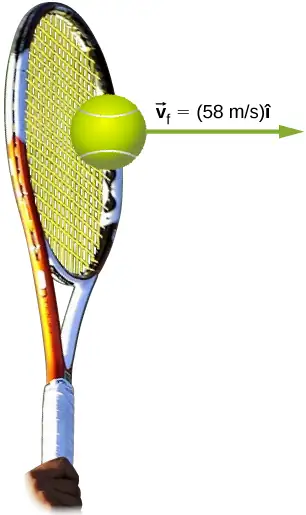
Strategy
This problem involves only one dimension because the ball starts from having no horizontal velocity component before impact. Newton’s second law stated in terms of momentum is then written as
As noted above, when mass is constant, the change in momentum is given by
where we have used scalars because this problem involves only one dimension. In this example, the velocity just after impact and the time interval are given; thus, once \(\Delta p\) is calculated, we can use\(F=\frac{\Delta p}{\Delta t}\) to find the force.
Solution
To determine the change in momentum, insert the values for the initial and final velocities into the equation above:
Now the magnitude of the net external force can be determined by using
where we have retained only two significant figures in the final step.
Significance
This quantity was the average force exerted by Venus Williams’ racquet on the tennis ball during its brief impact (note that the ball also experienced the 0.57-N force of gravity, but that force was not due to the racquet). This problem could also be solved by first finding the acceleration and then using \(F=ma\), but one additional step would be required compared with the strategy used in this example.
9.3 Conservation of Linear Momentum¶
Learning Objectives
By the end of this section, you will be able to:
- Explain the meaning of “conservation of momentum”
- Correctly identify if a system is, or is not, closed
- Define a system whose momentum is conserved
- Mathematically express conservation of momentum for a given system
- Calculate an unknown quantity using conservation of momentum
Recall Newton’s third law: When two objects of masses \(m_{1}\) and \(m_{2}\) interact (meaning that they apply forces on each other), the force that object 2 applies to object 1 is equal in magnitude and opposite in direction to the force that object 1 applies on object 2. Let:
- \({\mathbf{\vec{F}}}_{21}=\) the force on \(m_{1}\) from \(m_{2}\)
- \({\mathbf{\vec{F}}}_{12}=\) the force on \(m_{2}\) from \(m_{1}\)
Then, in symbols, Newton’s third law says
(Recall that these two forces do not cancel because they are applied to different objects. \(F_{21}\) causes \(m_{1}\) to accelerate, and \(F_{12}\) causes \(m_{2}\) to accelerate.)
Although the magnitudes of the forces on the objects are the same, the accelerations are not, simply because the masses (in general) are different. Therefore, the changes in velocity of each object are different:
However, the products of the mass and the change of velocity are equal (in magnitude):
equation callout
It’s a good idea, at this point, to make sure you’re clear on the physical meaning of the derivatives in Equation 9.3. Because of the interaction, each object ends up getting its velocity changed, by an amount dv. Furthermore, the interaction occurs over a time interval dt, which means that the change of velocities also occurs over dt. This time interval is the same for each object.
Let‘s assume, for the moment, that the masses of the objects do not change during the interaction. (We’ll relax this restriction later.) In that case, we can pull the masses inside the derivatives:
and thus
equation callout
This says that the rate at which momentum changes is the same for both objects. The masses are different, and the changes of velocity are different, but the rate of change of the product of m and \(\mathbf{\vec{v}}\) are the same.
Physically, this means that during the interaction of the two objects (\(m_{1}\:\text{and}\:m_{2}\)), both objects have their momentum changed; but those changes are identical in magnitude, though opposite in sign. For example, the momentum of object 1 might increase, which means that the momentum of object 2 decreases by exactly the same amount.
In light of this, let’s re-write Equation 9.12 in a more suggestive form:
equation callout
This says that during the interaction, although object 1’s momentum changes, and object 2’s momentum also changes, these two changes cancel each other out, so that the total change of momentum of the two objects together is zero.
Since the total combined momentum of the two objects together never changes, then we could write
from which it follows that
As shown in Figure 9.14, the total momentum of the system before and after the collision remains the same.
![Before collision yellow ball1 is moving down and to the right, aiming at the center of blue ball 2. Blue ball 2 is moving to the left and slightly down, and more slowly than ball 1. We are told that p total vector equals p 1 vector plus p 2 vector and we are shown the sum as a vector diagram: p 1 and p 2 are placed with the tail of p 2 at the head of p 1. A vector is drawn from the tail of p 1 to the head of p 2. After the collision, the yellow ball is moving slowly to the right and p 2 is moving more rapidly down and to the left. We are told that p prime total vector equals p prime 1 vector plus p prime 2 vector and we are shown the sum as a vector diagram: p prime 1 and p prime 2 are placed with the tail of p prime 2 at the head of p prime 1. A vector is drawn from the tail of p prime 1 to the head of p prime 2 and is the same length and in the same direction as the sum vector before collision.](img/cnx-uphysics-09-03-balls.webp)
Generalizing this result to N objects, we obtain
equation callout
Equation 9.17 is the definition of the total (or net) momentum of a system of N interacting objects, along with the statement that the total momentum of a system of objects is constant in time—or better, is conserved.
Conservation Laws
If the value of a physical quantity is constant in time, we say that the quantity is conserved.
Requirements for Momentum Conservation¶
There is a complication, however. A system must meet two requirements for its momentum to be conserved:
-
The mass of the system must remain constant during the interaction.
As the objects interact (apply forces on each other), they may transfer mass from one to another; but any mass one object gains is balanced by the loss of that mass from another. The total mass of the system of objects, therefore, remains unchanged as time passes:\[ {\left[ \frac{dm}{dt} \right]}_{\text{system}}=0. \] -
The net external force on the system must be zero.
As the objects collide, or explode, and move around, they exert forces on each other. However, all of these forces are internal to the system, and thus each of these internal forces is balanced by another internal force that is equal in magnitude and opposite in sign. As a result, the change in momentum caused by each internal force is cancelled by another momentum change that is equal in magnitude and opposite in direction. Therefore, internal forces cannot change the total momentum of a system because the changes sum to zero. However, if there is some external force that acts on all of the objects (gravity, for example, or friction), then this force changes the momentum of the system as a whole; that is to say, the momentum of the system is changed by the external force. Thus, for the momentum of the system to be conserved, we must have\[ {\mathbf{\vec{F}}}_{\mathbf{ext}}=\mathbf{\overrightarrow{0}}. \]
A system of objects that meets these two requirements is said to be a closed system (also called an isolated system). Thus, the more compact way to express this is shown below.
Law of Conservation of Momentum
The total momentum of a closed system is conserved:
This statement is called the Law of Conservation of Momentum. Along with the conservation of energy, it is one of the foundations upon which all of physics stands. All our experimental evidence supports this statement: from the motions of galactic clusters to the quarks that make up the proton and the neutron, and at every scale in between. In a closed system, the total momentum never changes.
Note that there absolutely can be external forces acting on the system; but for the system’s momentum to remain constant, these external forces have to cancel, so that the net external force is zero. Billiard balls on a table all have a weight force acting on them, but the weights are balanced (canceled) by the normal forces, so there is no net force.
The Meaning of ‘System’¶
A system (mechanical) is the collection of objects in whose motion (kinematics and dynamics) you are interested. If you are analyzing the bounce of a ball on the ground, you are probably only interested in the motion of the ball, and not of Earth; thus, the ball is your system. If you are analyzing a car crash, the two cars together compose your system (Figure 9.15).
![Illustration of collision of two cars with masses m 1 and m 2. The system of interest is the two cars before and after the collision. Before the collision, car m 2 is in front and moving forward with velocity v 2, and car m 1 is behind it, moving forward with velocity v 1. Net vector F = 0 and vectors p 1 plus p 2 equal p tot. After the collision, car m 2 is in front and moving forward with velocity v 2 prime which is larger than v 2 before the collision, and car m 1 is behind it, moving forward with velocity v 1 prime that is less than v 1 before the collision. Vectors p 1 prime plus p 2 prime equal p tot prime.](img/cnx-uphysics-09-03-twocars.webp)
Problem-Solving Strategy: Conservation of Momentum
Using conservation of momentum requires four basic steps. The first step is crucial:
- Identify a closed system (total mass is constant, no net external force acts on the system).
- Write down an expression representing the total momentum of the system before the “event” (explosion or collision).
- Write down an expression representing the total momentum of the system after the “event.”
- Set these two expressions equal to each other, and solve this equation for the desired quantity.
Example 9.6 Colliding Carts
Two carts in a physics lab roll on a level track, with negligible friction. These carts have small magnets at their ends, so that when they collide, they stick together (Figure 9.16). The first cart has a mass of 675 grams and is rolling at 0.75 m/s to the right; the second has a mass of 500 grams and is rolling at 1.33 m/s, also to the right. After the collision, what is the velocity of the two joined carts?
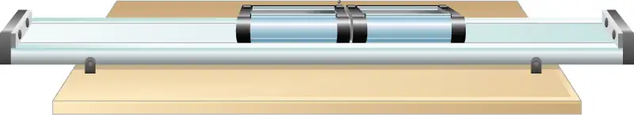
Strategy
We have a collision. We’re given masses and initial velocities; we’re asked for the final velocity. This all suggests using conservation of momentum as a method of solution. However, we can only use it if we have a closed system. So we need to be sure that the system we choose has no net external force on it, and that its mass is not changed by the collision.
Defining the system to be the two carts meets the requirements for a closed system: The combined mass of the two carts certainly doesn’t change, and while the carts definitely exert forces on each other, those forces are internal to the system, so they do not change the momentum of the system as a whole. In the vertical direction, the weights of the carts are canceled by the normal forces on the carts from the track.
Solution
Conservation of momentum is
Define the direction of their initial velocity vectors to be the +x-direction. The initial momentum is then
The final momentum of the now-linked carts is
Equating:
Substituting the given numbers:
Significance
The principles that apply here to two laboratory carts apply identically to all objects of whatever type or size. Even for photons, the concepts of momentum and conservation of momentum are still crucially important even at that scale. (Since they are massless, the momentum of a photon is defined very differently from the momentum of ordinary objects. You will learn about this when you study quantum physics.)
Check Your Understanding
Suppose the second, smaller cart had been initially moving to the left. What would the sign of the final velocity have been in this case?
Answer
If the smaller cart were rolling at 1.33 m/s to the left, then conservation of momentum gives
\(\begin{array}{ccc} (m_{1}+m_{2}){\mathbf{\vec{v}}}_{\mathbf{f}} & = & m_{1}v_{1}\mathbf{\hat{i}}-m_{2}v_{2}\mathbf{\hat{i}} \\ {\mathbf{\vec{v}}}_{\mathbf{f}} & = & \left( \frac{m_{1}v_{1}-m_{2}v_{2}}{m_{1}+m_{2}} \right)\mathbf{\hat{i}} \\ & = & \left[ \frac{(0.675\:\text{kg})(0.75\:\text{m/s})-(0.500\:\text{kg})(1.33\:\text{m/s})}{1.175\:\text{kg}} \right]\mathbf{\hat{i}} \\ & = & -(0.135\:\text{m/s})\mathbf{\hat{i}} \end{array}\)
Thus, the final velocity is 0.135 m/s to the left.
Example 9.7 A Bouncing Superball
A superball of mass 0.25 kg is dropped from rest from a height of \(h=1.50\:\text{m}\) above the floor. It bounces with no loss of energy and returns to its initial height (Figure 9.17).
- What is the superball’s change of momentum during its bounce on the floor?
- What was Earth’s change of momentum due to the ball colliding with the floor?
- What was Earth’s change of velocity as a result of this collision?
(This example shows that you have to be careful about defining your system.)
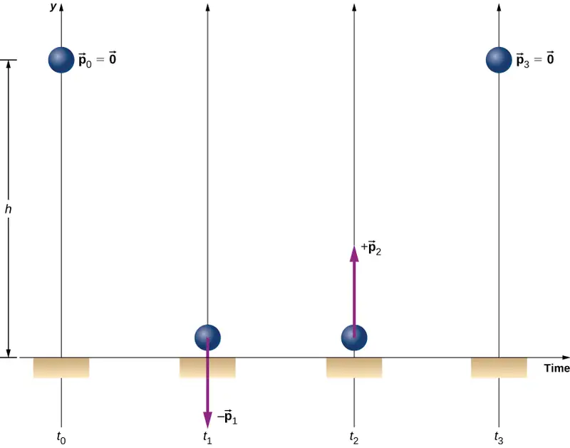
Strategy
Since we are asked only about the ball’s change of momentum, we define our system to be the ball. But this is clearly not a closed system; gravity applies a downward force on the ball while it is falling, and the normal force from the floor applies a force during the bounce. Thus, we cannot use conservation of momentum as a strategy. Instead, we simply determine the ball’s momentum just before it collides with the floor and just after, and calculate the difference. We have the ball’s mass, so we need its velocities.
Solution
a. Since this is a one-dimensional problem, we use the scalar form of the equations. Let:
- \(p_{0}=\) the magnitude of the ball’s momentum at time \(t_{0}\), the moment it was released; since it was dropped from rest, this is zero.
- \(p_{1}=\) the magnitude of the ball’s momentum at time \(t_{1}\), the instant just before it hits the floor.
- \(p_{2}=\) the magnitude of the ball’s momentum at time \(t_{2}\), just after it loses contact with the floor after the bounce.
The ball’s change of momentum is
Its velocity just before it hits the floor can be determined from either conservation of energy or kinematics. We use kinematics here; you should re-solve it using conservation of energy and confirm you get the same result.
We want the velocity just before it hits the ground (at time \(t_{1}\)). We know its initial velocity \(v_{0}=0\) (at time \(t_{0}\)), the height it falls, and its acceleration; we don’t know the fall time. We could calculate that, but instead we use
Thus the ball has a momentum of
We don’t have an easy way to calculate the momentum after the bounce. Instead, we reason from the symmetry of the situation.
Before the bounce, the ball starts with zero velocity and falls 1.50 m under the influence of gravity, achieving some amount of momentum just before it hits the ground. On the return trip (after the bounce), it starts with some amount of momentum, rises the same 1.50 m it fell, and ends with zero velocity. Thus, the motion after the bounce was the mirror image of the motion before the bounce. From this symmetry, it must be true that the ball’s momentum after the bounce must be equal and opposite to its momentum before the bounce. (This is a subtle but crucial argument; make sure you understand it before you go on.)
Therefore,
Thus, the ball’s change of momentum during the bounce is
b. What was Earth’s change of momentum due to the ball colliding with the floor?
Your instinctive response may well have been either “zero; the Earth is just too massive for that tiny ball to have affected it” or possibly, “more than zero, but utterly negligible.” But no—if we re-define our system to be the Superball + Earth, then this system is closed (neglecting the gravitational pulls of the Sun, the Moon, and the other planets in the solar system), and therefore the total change of momentum of this new system must be zero. Therefore, Earth’s change of momentum is exactly the same magnitude:
c. What was Earth’s change of velocity as a result of this collision?
This is where your instinctive feeling is probably correct:
This change of Earth’s velocity is utterly negligible.
Significance
It is important to realize that the answer to part (c) is not a velocity; it is a change of velocity, which is a very different thing. Nevertheless, to give you a feel for just how small that change of velocity is, suppose you were moving with a velocity of \(4.7\:\times\:{10}^{-25}\:\text{m/s}\). At this speed, it would take you about 7 million years to travel a distance equal to the diameter of a hydrogen atom.
Check Your Understanding
Would the ball’s change of momentum have been larger, smaller, or the same, if it had collided with the floor and stopped (without bouncing)?
Answer
If the ball does not bounce, its final momentum \({\mathbf{\vec{p}}}_{\mathbf{2}}\) is zero, so
\(\begin{array}{cc} \Delta\mathbf{\vec{p}} & ={\mathbf{\vec{p}}}_{\mathbf{2}}-{\mathbf{\vec{p}}}_{\mathbf{1}} \\ & =(0)\mathbf{\hat{j}}-(-1.4\:\text{kg}\cdot\text{m/s})\mathbf{\hat{j}} \\ & =+(1.4\:\text{kg}\cdot\text{m/s})\mathbf{\hat{j}} \end{array}\)
Example 9.8 Ice Hockey 1
Two hockey pucks of identical mass are on a flat, horizontal ice hockey rink. The red puck is motionless; the blue puck is moving at 2.5 m/s to the left (Figure 9.18). It collides with the motionless red puck. The pucks have a mass of 15 g. After the collision, the red puck is moving at 2.5 m/s, to the left. What is the final velocity of the blue puck?
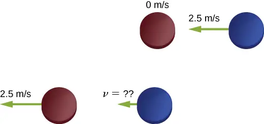
Strategy
We’re told that we have two colliding objects, we’re told the masses and initial velocities, and one final velocity; we’re asked for both final velocities. Conservation of momentum seems like a good strategy. Define the system to be the two pucks; there’s no friction, so we have a closed system.
Before you look at the solution, what do you think the answer will be?
The blue puck final velocity will be:
- zero
- 2.5 m/s to the left
- 2.5 m/s to the right
- 1.25 m/s to the left
- 1.25 m/s to the right
- something else
Solution
Define the +x-direction to point to the right. Conservation of momentum then reads
Before the collision, the momentum of the system is entirely and only in the blue puck. Thus,
(Remember that the masses of the pucks are equal.) Substituting numbers:
Significance
Evidently, the two pucks simply exchanged momentum. The blue puck transferred all of its momentum to the red puck. In fact, this is what happens in similar collision where \(m_{1}=m_{2}.\)
Check Your Understanding
Even if there were some friction on the ice, it is still possible to use conservation of momentum to solve this problem, but you would need to impose an additional condition on the problem. What is that additional condition?
Answer
Consider the impulse momentum theory, which is \(\vec{J}=\Delta\vec{p}\). If \(\vec{J}=0\), we have the situation described in the example. If a force acts on the system, then \(\vec{J}={\vec{F}}_{\text{ave}}\Delta t\). Thus, instead of \({\mathbf{\vec{p}}}_{f}={\mathbf{\vec{p}}}_{i}\), we have
\({\vec{F}}_{\text{ave}}\Delta t=\Delta\vec{p}={\vec{p}}_{\text{f}}-{\vec{p}}_{\text{i}}\)
where \({\mathbf{\vec{F}}}_{\text{ave}}\) is the force due to friction.
Example 9.9 Landing of Philae
On November 12, 2014, the European Space Agency successfully landed a probe named Philae on Comet 67P/Churyumov/Gerasimenko (Figure 9.19). During the landing, however, the probe actually landed three times, because it bounced twice. Let’s calculate how much the comet’s speed changed as a result of the first bounce.
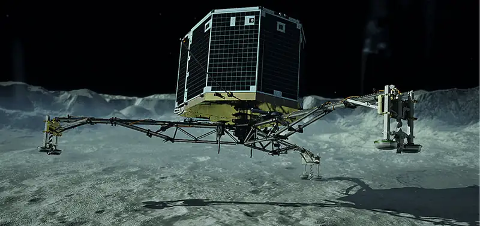
Let’s define upward to be the +y-direction, perpendicular to the surface of the comet, and \(y=0\) to be at the surface of the comet. Here’s what we know:
- The mass of Comet 67P: \(M_{c}=1.0\:\times\:{10}^{13}\:\text{kg}\)
- The acceleration due to the comet’s gravity: \(\mathbf{\vec{a}}=-(5.0\:\times\:{10}^{-3}\:\text{m/s}^{2})\mathbf{\hat{j}}\)
- Philae’s mass: \(M_{p}=96\:\text{kg}\)
- Initial touchdown speed: \({\mathbf{\vec{v}}}_{\mathbf{1}}=-(1.0\:\text{m/s})\mathbf{\hat{j}}\)
- Initial upward speed due to first bounce: \({\mathbf{\vec{v}}}_{\mathbf{2}}=(0.38\:\text{m/s})\mathbf{\hat{j}}\)
- Landing impact time: \(\Delta t=1.3\:\text{s}\)
Strategy
We’re asked for how much the comet’s speed changed, but we don’t know much about the comet, beyond its mass and the acceleration its gravity causes. However, we are told that the Philae lander collides with (lands on) the comet, and bounces off of it. A collision suggests momentum as a strategy for solving this problem.
If we define a system that consists of both Philae and Comet 67/P, then there is no net external force on this system, and thus the momentum of this system is conserved. (We’ll neglect the gravitational force of the sun.) Thus, if we calculate the change of momentum of the lander, we automatically have the change of momentum of the comet. Also, the comet’s change of velocity is directly related to its change of momentum as a result of the lander “colliding” with it.
Solution
Let \({\mathbf{\vec{p}}}_{1}\) be Philae’s momentum at the moment just before touchdown, and \({\mathbf{\vec{p}}}_{2}\) be its momentum just after the first bounce. Then its momentum just before landing was
and just after was
Therefore, the lander’s change of momentum during the first bounce is
Notice how important it is to include the negative sign of the initial momentum.
Now for the comet. Since momentum of the system must be conserved, the comet’s momentum changed by exactly the negative of this:
Therefore, its change of velocity is
Significance
This is a very small change in velocity, about a thousandth of a billionth of a meter per second. Crucially, however, it is not zero.
Check Your Understanding
The changes of momentum for Philae and for Comet 67/P were equal (in magnitude). Were the impulses experienced by Philae and the comet equal? How about the forces? How about the changes of kinetic energies?
Answer
The impulse is the change in momentum multiplied by the time required for the change to occur. By conservation of momentum, the changes in momentum of the probe and the comment are of the same magnitude, but in opposite directions, and the interaction time for each is also the same. Therefore, the impulse each receives is of the same magnitude, but in opposite directions. Because they act in opposite directions, the impulses are not the same. As for the impulse, the force on each body acts in opposite directions, so the forces on each are not equal. However, the change in kinetic energy differs for each, because the collision is not elastic.
9.4 Types of Collisions¶
Learning Objectives
By the end of this section, you will be able to:
- Identify the type of collision
- Correctly label a collision as elastic or inelastic
- Use kinetic energy along with momentum and impulse to analyze a collision
Although momentum is conserved in all interactions, not all interactions (collisions or explosions) are the same. The possibilities include:
- A single object can explode into multiple objects (explosions).
- Multiple objects can collide and bounce off each other, called an elastic collision, resulting in the same kinetic energy of the system before and after the collision.
- Multiple objects can collide and the system loses kinetic energy, called an inelastic collision. One such case is where the two objects stick together, forming a single object.
It’s useful, therefore, to categorize different types of interactions, according to how the interacting objects move before and after the interaction.
Explosions¶
The first possibility is that a single object may break apart into two or more pieces. An example of this is a firecracker, or a bow and arrow, or a rocket rising through the air toward space. These can be difficult to analyze if the number of fragments after the collision is more than about three or four; but nevertheless, the total momentum of the system before and after the explosion is identical.
Note that if the object is initially motionless, then the system (which is just the object) has no momentum and no kinetic energy. After the explosion, the net momentum of all the pieces of the object must sum to zero (since the momentum of this closed system cannot change). However, the system will have a great deal of kinetic energy after the explosion, although it had none before. Thus, we see that, although the momentum of the system is conserved in an explosion, the kinetic energy of the system most definitely is not; it increases. This interaction—one object becoming many, with an increase of kinetic energy of the system—is called an explosion.
Where does the energy come from? Does conservation of energy still hold? Yes; some form of potential energy is converted to kinetic energy. In the case of gunpowder burning and pushing out a bullet, chemical potential energy is converted to kinetic energy of the bullet, and of the recoiling gun. For a bow and arrow, it is elastic potential energy in the bowstring.
Inelastic¶
The second possibility is the reverse: that two or more objects collide with each other and stick together, thus (after the collision) forming one single composite object. The total mass of this composite object is the sum of the masses of the original objects, and the new single object moves with a velocity dictated by the conservation of momentum. However, it turns out again that, although the total momentum of the system of objects remains constant, the kinetic energy doesn’t; but this time, the kinetic energy decreases. This type of collision is called inelastic.
Any collision where the objects stick together will result in the maximum loss of kinetic energy (i.e., \(K_{\text{f}}\) will be a minimum).
Such a collision is called perfectly inelastic. In the extreme case, multiple objects collide, stick together, and remain motionless after the collision. Since the objects are all motionless after the collision, the final kinetic energy is also zero; therefore, the loss of kinetic energy is a maximum.
- If \(0 \lt K_{\text{f}} \lt K_{\text{i}}\), the collision is inelastic.
- If \(K_{\text{f}}\) is the lowest energy, or the energy lost by both objects is the most, the collision is perfectly inelastic (objects stick together).
- If \(K_{\text{f}}=K_{\text{i}}\), the collision is elastic.
Elastic¶
The extreme case on the other end is if two or more objects approach each other, collide, and bounce off each other, moving away from each other at the same relative speed at which they approached each other. In this case, the total kinetic energy of the system is conserved. Such an interaction is called elastic.
Problem-Solving Strategy: Collisions
A closed system always conserves momentum; it might also conserve kinetic energy, but very often it doesn’t. Energy-momentum problems confined to a plane (as ours are) usually have two unknowns. Generally, this approach works well:
- Define a closed system.
- Write down the expression for conservation of momentum.
- If kinetic energy is conserved, write down the expression for conservation of kinetic energy; if not, write down the expression for the change of kinetic energy.
- You now have two equations in two unknowns, which you solve by standard methods.
Example 9.10 Formation of a Deuteron
A proton (mass \(1.67\:\times\:{10}^{-27}\:\text{kg}\)) collides with a neutron (with essentially the same mass as the proton) to form a particle called a deuteron. What is the velocity of the deuteron if it is formed from a proton moving with velocity \(7.0\:\times\:{10}^{6}\:\text{m/s}\) to the right and a neutron moving with velocity \(4.0\:\times\:{10}^{6}\:\text{m/s}\) to the left?
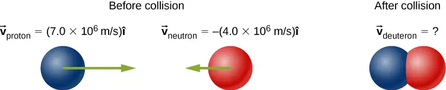
Strategy
Define the system to be the two particles. This is a collision, so we should first identify what kind. Since we are told the two particles form a single particle after the collision, this means that the collision is perfectly inelastic. Thus, kinetic energy is not conserved, but momentum is. Thus, we use conservation of momentum to determine the final velocity of the system.
Solution
Treat the two particles as having identical masses M. Use the subscripts p, n, and d for proton, neutron, and deuteron, respectively. This is a one-dimensional problem, so we have
The masses divide out:
The velocity is thus \({\mathbf{\vec{v}}}_{\text{d}}=(1.5\:\times\:{10}^{6}\:\text{m/s})\mathbf{\hat{i}}\).
Significance
This is essentially how particle colliders like the Large Hadron Collider work: They accelerate particles up to very high speeds (large momenta), but in opposite directions. This maximizes the creation of so-called “daughter particles.”
Example 9.11 Ice Hockey 2
(This is a variation of an earlier example.)
Two ice hockey pucks of different masses are on a flat, horizontal hockey rink. The red puck has a mass of 15 grams, and is motionless; the blue puck has a mass of 12 grams, and is moving at 2.5 m/s to the left. It collides with the motionless red puck (Figure 9.20). If the collision is perfectly elastic, what are the final velocities of the two pucks?
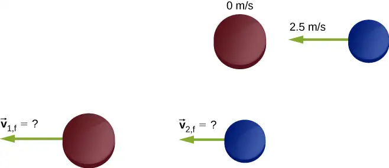
Strategy
We’re told that we have two colliding objects, and we’re told their masses and initial velocities; we’re asked for both final velocities. Conservation of momentum seems like a good strategy; define the system to be the two pucks. There is no friction, so we have a closed system. We have two unknowns (the two final velocities), but only one equation. The comment about the collision being perfectly elastic is the clue; it suggests that kinetic energy is also conserved in this collision. That gives us our second equation.
The initial momentum and initial kinetic energy of the system resides entirely and only in the second puck (the blue one); the collision transfers some of this momentum and energy to the first puck.
Solution
Conservation of momentum, in this case, reads
Conservation of kinetic energy reads
There are our two equations in two unknowns. The algebra is tedious but not terribly difficult; you definitely should work it through. The solution is
Substituting with the given numbers where a positive direction is to the left, we obtain
Significance
Notice that after the collision, the blue puck is moving to the right; its direction of motion was reversed. The red puck is now moving to the left.
Check Your Understanding
There is a possible mathematical second to the system of equations solved in this example (because the energy equation is quadratic): \(v_{\text{1,f}}=0,v_{\text{2,f}}=-2.5\:\text{m/s}\). This solution is unacceptable on physical grounds; what’s wrong with it?
Answer
This solution represents the case in which no interaction takes place: the first puck misses the second puck and continues on with a velocity of 2.5 m/s to the left. This case offers no meaningful physical insights.
Example 9.12 Thor vs. Iron Man
The 2012 movie “The Avengers” has a scene where Iron Man and Thor fight. At the beginning of the fight, Thor throws his hammer at Iron Man, hitting him and throwing him slightly up into the air and against a small tree, which breaks. From the video, Iron Man is standing still when the hammer hits him. The distance between Thor and Iron Man is approximately 10 m, and the hammer takes about 1 s to reach Iron Man after Thor releases it. The tree is about 2 m behind Iron Man, which he hits in about 0.75 s. Also from the video, Iron Man’s trajectory to the tree is very close to horizontal. Assuming Iron Man’s total mass is 200 kg:
- Estimate the mass of Thor’s hammer
- Estimate how much kinetic energy was lost in this collision
Strategy
After the collision, Thor’s hammer is in contact with Iron Man for the entire time, so this is a perfectly inelastic collision. Thus, with the correct choice of a closed system, we expect momentum is conserved, but not kinetic energy. We use the given numbers to estimate the initial momentum, the initial kinetic energy, and the final kinetic energy. Because this is a one-dimensional problem, we can go directly to the scalar form of the equations.
Solution
a. First, we posit conservation of momentum. For that, we need a closed system. The choice here is the system (hammer + Iron Man), from the time of collision to the moment just before Iron Man and the hammer hit the tree. Let:
- \(M_{\text{H}}=\) mass of the hammer
- \(M_{\text{I}}=\) mass of Iron Man
- \(v_{\text{H}}=\) velocity of the hammer before hitting Iron Man
- v\(=\) combined velocity of Iron Man + hammer after the collision
Again, Iron Man’s initial velocity was zero. Conservation of momentum here reads:
We are asked to find the mass of the hammer, so we have
Considering the uncertainties in our estimates, this should be expressed with just one significant figure; thus, \(M_{\text{H}}=7\:\times\:{10}^{1}\:\text{kg}\).
b. The initial kinetic energy of the system, like the initial momentum, is all in the hammer:
After the collision,
Thus, there was a loss of \(3500\:\text{J}-960\:\text{J}=2540\:\text{J}\).
Significance
From other scenes in the movie, Thor apparently can control the hammer’s velocity with his mind. It is possible, therefore, that he mentally causes the hammer to maintain its initial velocity of 10 m/s while Iron Man is being driven backward toward the tree. If so, this would represent an external force on our system, so it would not be closed. Thor’s mental control of his hammer is beyond the scope of this book, however.
Example 9.13 Analyzing a Car Crash
At a stoplight, a small car (1200 kg) collides with a motionless large truck (3000 kg). The car comes to an instantaneous stop; the truck slides straight ahead, coming to a stop after sliding 10 meters. The measured coefficient of friction between the truck’s tires and the road was 0.62. How fast was the car moving at the moment of impact?
Strategy
At first it may seem we don’t have enough information to solve this problem. Although we know the initial speed of the truck, we don’t know the speed of the car (indeed, that’s what we’re asked to find), so we don’t know the initial momentum of the system. Similarly, we know the final speed of the car, but not the speed of the truck immediately after impact. The fact that the truck eventually slid to a speed of zero doesn’t help with the final momentum, since an external friction force caused that. Nor can we calculate an impulse, since we don’t know the collision time, or the amount of time the truck slid before stopping. A useful strategy is to impose a restriction on the analysis.
Suppose we define a system consisting of just the car and the truck. The momentum of this system isn’t conserved, because of the friction between the truck and the road. But if we could find the speed of the truck the instant after impact—before friction had any measurable effect on the truck—then we could consider the momentum of the system to be conserved, with that restriction.
Can we find the final speed of the truck? Yes; we invoke the work-energy theorem.
Solution
First, define some variables. Let:
- \(M_{\text{c}}\:\text{and}\:M_{\text{T}}\) be the masses of the car and truck, respectively
- \(v_{\text{T,i}}\:\text{and}v_{\text{T,f}}\) be the velocities of the truck before and after the collision, respectively
- \(v_{\text{c,i}}\:\text{and}v_{\text{c,f}}\) Z be the velocities of the car before and after the collision, respectively
- \(K_{\text{i}}\:\text{and}\:K_{\text{f}}\) be the kinetic energies of the truck immediately after the collision, and after the truck has stopped sliding (so \(K_{\text{f}}=0\)).
- d be the distance the truck slides after the collision before eventually coming to a stop.
Since we actually want the initial speed of the car, and since the car is not part of the work-energy calculation, let’s start with conservation of momentum. For the car + truck system, conservation of momentum reads
Since the car’s initial velocity was zero, as was the truck’s final velocity, this simplifies to
So now we need the truck’s speed immediately after impact. Recall that
where
Also,
The work is done over the distance the truck slides, which we’ve called d. Equating:
Friction is the force on the truck that does the work to stop the sliding. With a level road, the friction force is
Since the angle between the directions of the friction force vector and the displacement d is \(180{}^{\circ}\), and \(\cos(180{}^{\circ})=-1,\) we have
(Notice that the truck’s mass divides out; evidently the mass of the truck doesn’t matter.)
Solving for the truck’s speed immediately after the collision gives
Substituting the given numbers:
Now we can calculate the initial speed of the car:
Significance
This is an example of the type of analysis done by investigators of major car accidents. A great deal of legal and financial consequences depend on an accurate analysis and calculation of momentum and energy.
This collision converted some of the initial kinetic energy to other forms (presumably the deformation of the car and truck and some heat and sound):
Change in kinetic energy = \(2.7\times{10}^{5}\quad\text{J}\)
Check Your Understanding
Suppose there had been no friction (the collision happened on ice); that would make \(\mu_{\text{k}}\) zero, and thus \(v_{\text{c,f}}=\sqrt{2\mu_{\text{k}}gd}=0\), which is obviously wrong. What is the mistake in this conclusion?
Answer
If zero friction acts on the car, then it will continue to slide indefinitely (\(d\rightarrow\infty\)), so we cannot use the work-energy theorem as is done in the example. Thus, we could not solve the problem from the information given.
Subatomic Collisions and Momentum¶
Conservation of momentum is crucial to our understanding of atomic and subatomic particles because much of what we know about these particles comes from collision experiments.
At the beginning of the twentieth century, there was considerable interest in, and debate about, the structure of the atom. It was known that atoms contain two types of electrically charged particles: negatively charged electrons and positively charged protons. (The existence of an electrically neutral particle was suspected, but would not be confirmed until 1932.) The question was, how were these particles arranged in the atom? Were they distributed uniformly throughout the volume of the atom (as J.J. Thomson proposed), or arranged at the corners of regular polygons (which was Gilbert Lewis’ model), or rings of negative charge that surround the positively charged nucleus—rather like the planetary rings surrounding Saturn (as suggested by Hantaro Nagaoka), or something else?
The New Zealand physicist Ernest Rutherford (along with the German physicist Hans Geiger and the British physicist Ernest Marsden) performed the crucial experiment in 1909. They bombarded a thin sheet of gold foil with a beam of high-energy (that is, high-speed) alpha-particles (the nucleus of a helium atom). The alpha-particles collided with the gold atoms, and their subsequent velocities were detected and analyzed, using conservation of momentum and conservation of energy.
If the charges of the gold atoms were distributed uniformly (per Thomson), then the alpha-particles should collide with them and nearly all would be deflected through many angles, all small; the Nagaoka model would produce a similar result. If the atoms were arranged as regular polygons (Lewis), the alpha-particles would deflect at a relatively small number of angles.
What actually happened is that nearly none of the alpha-particles were deflected. Those that were, were deflected at large angles, some close to \(180{}^{\circ}\)—those alpha-particles reversed direction completely (Figure 9.21). None of the existing atomic models could explain this. Eventually, Rutherford developed a model of the atom that was much closer to what we now have—again, using conservation of momentum and energy as his starting point.
![Illustrations of the Thomson and Rutherford models of the atom and the associated experiments. The Thomson model has electrons, illustrated as small solid balls distributed throughout a large, uniform sphere. Alpha particles pass through undeflected. Several trajectories of alpha particles, incident from the left and travelling horizontally to the right are shown as straight, parallel lines that pass through the atom unchanged. The experiment consists of a collimated source of alpha particles. The beam of particles passes through a gap in a screen that surrounds a gold foil target. The beam passes through the target, spreading a little, but hitting the screen in a small spot on the far side of the screen. The expected result is particles detected in only one spot. The Rutherford model has electrons, illustrated as small solid balls distributed throughout the atom, but the nucleus is a small sphere in the center. Several trajectories of alpha particles, incident from the left and travelling horizontally to the right are shown as straight, parallel lines as they enter the atom. Some pass through unchanged, one is bent slightly away from its original direction, and is bent back at an angle large than 90 degrees. The experiment consists of a collimated source of alpha particles. The beam of particles passes through a gap in a screen that surrounds a gold foil target. The beam passes through the target, most of it passing through but spreading significantly and hitting the screen on the far side over an extended region, and a few of the particles hitting the screen on the same side of foil as the source. The expected result is particles detected in many spots.](img/cnx-uphysics-09-04-tvsr.webp)
9.5 Collisions in Multiple Dimensions¶
Learning Objectives
By the end of this section, you will be able to:
- Express momentum as a two-dimensional vector
- Write equations for momentum conservation in component form
- Calculate momentum in two dimensions, as a vector quantity
It is far more common for collisions to occur in two dimensions; that is, the angle between the initial velocity vectors is neither zero nor \(180{}^{\circ}\). Let’s see what complications arise from this.
The first idea we need is that momentum is a vector; like all vectors, it can be expressed as a sum of perpendicular components (usually, though not always, an x-component and a y-component, and a z-component if necessary). Thus, when we write down the statement of conservation of momentum for a problem, our momentum vectors can be, and usually will be, expressed in component form.
The second idea we need comes from the fact that momentum is related to force:
Expressing both the force and the momentum in component form,
Remember, these equations are simply Newton’s second law, in vector form and in component form. We know that Newton’s second law is true in each direction, independently of the others. It follows therefore (via Newton’s third law) that conservation of momentum is also true in each direction independently.
These two ideas motivate the solution to two-dimensional problems: We write down the expression for conservation of momentum twice: once in the x-direction and once in the y-direction.
equation callout
This procedure is shown graphically in Figure 9.22.
![Figure a, titled break initial momentum into x and y components shows vector p 1 i as a solid arrow pointing to the right and down. Its components are shown as dashed arrows: p 1 i y points down from the tail of p 1 i and p 1 i x points to the right from the head of p 1 i y to the head of p 1 i. Vector p 2 i is shown as a solid arrow with its tail at the head of vector p 1 i, and is shorter than p 1 i. Vector p 2 i points to the right and up. Its components are shown as dashed arrows: p 2 i x points to the right from the tail of p 2 i and p 2 i y points up from the head of p 2 i x to the head of p 2 i. Vector p f points from the tail of p 1 i to the head of p 2 i, pointing to the right and slightly down. Figure b titled add x and y components to obtain x and y components of final momentum shows the vector sums of the components. P 1 i y is a downward arrow. P 2 i y is a shorter upward arrow, aligned with its tail at the head of P 1 i y. P f y is a short downward arrow that starts at the tail of P 1 i y and ends at the head of P 2 i y. P 1 i x is a rightward arrow. P 2 i x is a shorter rightward arrow, aligned with its tail at the head of P 1 i x. P f x is a long rightward arrow that starts at the tail of P 1 i x and ends at the head of P 2 i x. Figure c, titled add x and y components of final momentum shows the right triangle formed by sides p f x and p f y and hypotenuse p f. Arrows from figure b indicate that p f x and p f y are the same in figures b and c.](img/cnx-uphysics-09-05-vector-add.webp)
We solve each of these two component equations independently to obtain the x- and y-components of the desired velocity vector:
(Here, m represents the total mass of the system.) Finally, combine these components using the Pythagorean theorem,
Problem-Solving Strategy: Conservation of Momentum in Two Dimensions
The method for solving a two-dimensional (or even three-dimensional) conservation of momentum problem is generally the same as the method for solving a one-dimensional problem, except that you have to conserve momentum in both (or all three) dimensions simultaneously:
- Identify a closed system.
- Write down the equation that represents conservation of momentum in the x-direction, and solve it for the desired quantity. If you are calculating a vector quantity (velocity, usually), this will give you the x-component of the vector.
- Write down the equation that represents conservation of momentum in the y-direction, and solve. This will give you the y-component of your vector quantity.
- Assuming you are calculating a vector quantity, use the Pythagorean theorem to calculate its magnitude, using the results of steps 3 and 4.
Example 9.14 Traffic Collision
A small car of mass 1200 kg traveling east at 60 km/hr collides at an intersection with a truck of mass 3000 kg that is traveling due north at 40 km/hr (Figure 9.23). The two vehicles are locked together. What is the velocity of the combined wreckage?
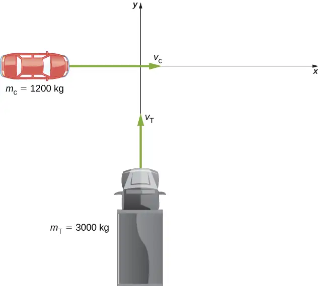
Strategy
First off, we need a closed system. The natural system to choose is the (car + truck), but this system is not closed; friction from the road acts on both vehicles. We avoid this problem by restricting the question to finding the velocity at the instant just after the collision, so that friction has not yet had any effect on the system. With that restriction, momentum is conserved for this system.
Since there are two directions involved, we do conservation of momentum twice: once in the x-direction and once in the y-direction.
Solution
Before the collision the total momentum is
After the collision, the wreckage has momentum
Since the system is closed, momentum must be conserved, so we have
We have to be careful; the two initial momenta are not parallel. We must add vectorially (Figure 9.24).
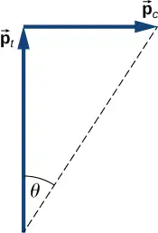
If we define the +x-direction to point east and the +y-direction to point north, as in the figure, then (conveniently),
Therefore, in the x-direction:
and in the y-direction:
Applying the Pythagorean theorem gives
As for its direction, using the angle shown in the figure,
This angle is east of north, or \(31{}^{\circ}\) counterclockwise from the +x-direction.
Significance
As a practical matter, accident investigators usually work in the “opposite direction”; they measure the distance of skid marks on the road (which gives the stopping distance) and use the work-energy theorem along with conservation of momentum to determine the speeds and directions of the cars prior to the collision. We saw that analysis in an earlier section.
Check Your Understanding
Suppose the initial velocities were not at right angles to each other. How would this change both the physical result and the mathematical analysis of the collision?
Answer
Were the initial velocities not at right angles, then one or both of the velocities would have to be expressed in component form. The mathematical analysis of the problem would be slightly more involved, but the physical result would not change.
Example 9.15 Exploding Scuba Tank
A common scuba tank is an aluminum cylinder that weighs 31.7 pounds empty (Figure 9.25). When full of compressed air, the internal pressure is between 2500 and 3000 psi (pounds per square inch). Suppose such a tank, which had been sitting motionless, suddenly explodes into three pieces. The first piece, weighing 10 pounds, shoots off horizontally at 235 miles per hour; the second piece (7 pounds) shoots off at 172 miles per hour, also in the horizontal plane, but at a \(19{}^{\circ}\) angle to the first piece. What is the mass and initial velocity of the third piece? (Do all work, and express your final answer, in SI units.)
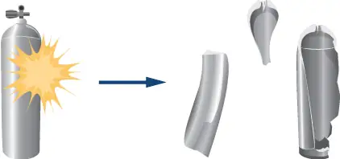
Strategy
To use conservation of momentum, we need a closed system. If we define the system to be the scuba tank, this is not a closed system, since gravity is an external force. However, the problem asks for just the initial velocity of the third piece, so we can neglect the effect of gravity and consider the tank by itself as a closed system. Notice that, for this system, the initial momentum vector is zero.
We choose a coordinate system where all the motion happens in the xy-plane. We then write down the equations for conservation of momentum in each direction, thus obtaining the x- and y-components of the momentum of the third piece, from which we obtain its magnitude (via the Pythagorean theorem) and its direction. Finally, dividing this momentum by the mass of the third piece gives us the velocity.
Solution
First, let’s get all the conversions to SI units out of the way:
Now apply conservation of momentum in each direction.
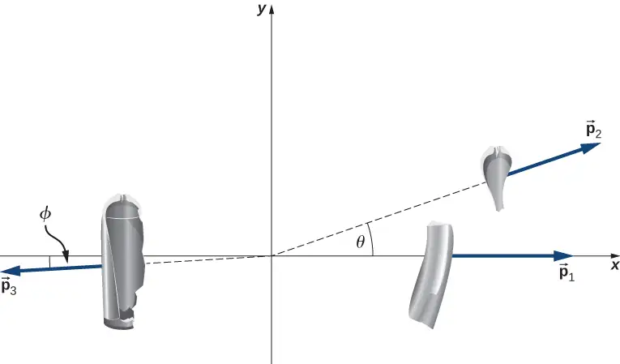
x-direction:
y-direction:
From our chosen coordinate system, we write the x-components as
For the y-direction, we have
This gives the magnitude of \(p_{3}\):
The velocity of the third piece is therefore
The direction of its velocity vector is the same as the direction of its momentum vector:
Because \(\phi\) is below the \(-x\)-axis, the actual angle is \(183.5{}^{\circ}\) from the +x-direction.
Significance
The enormous velocities here are typical; an exploding tank of any compressed gas can easily punch through the wall of a house and cause significant injury, or death. Fortunately, such explosions are extremely rare, on a percentage basis.
Check Your Understanding
Notice that the mass of the air in the tank was neglected in the analysis and solution. How would the solution method changed if the air was included? How large a difference do you think it would make in the final answer?
Answer
The volume of a scuba tank is about 11 L. Assuming air is an ideal gas, the number of gas molecules in the tank is
\(\begin{array}{ccc} PV & = & NRT \\ N & = & \frac{PV}{RT}=\frac{(2500\:\text{psi})(0.011\:\text{m}^{3})}{(8.31\:\text{J/mol}\cdot\text{K})(300\:\text{K})}\left( \frac{6894.8\:\text{Pa}}{1\:\text{psi}} \right) \\ & = & 7.59\:\times\:{10}^{1}\:\text{mol} \end{array}\)
The average molecular mass of air is 29 g/mol, so the mass of air contained in the tank is about 2.2 kg. This is about 10 times less than the mass of the tank, so it is safe to neglect it. Also, the initial force of the air pressure is roughly proportional to the surface area of each piece, which is in turn proportional to the mass of each piece (assuming uniform thickness). Thus, the initial acceleration of each piece would change very little if we explicitly consider the air.
9.6 Center of Mass¶
Learning Objectives
By the end of this section, you will be able to:
- Explain the meaning and usefulness of the concept of center of mass
- Calculate the center of mass of a given system
- Apply the center of mass concept in two and three dimensions
- Calculate the velocity and acceleration of the center of mass
We have been avoiding an important issue up to now: When we say that an object moves (more correctly, accelerates) in a way that obeys Newton’s second law, we have been ignoring the fact that all objects are actually made of many constituent particles. A car has an engine, steering wheel, seats, passengers; a football is leather and rubber surrounding air; a brick is made of atoms. There are many different types of particles, and they are generally not distributed uniformly in the object. How do we include these facts into our calculations?
Then too, an extended object might change shape as it moves, such as a water balloon or a cat falling (Figure 9.26). This implies that the constituent particles are applying internal forces on each other, in addition to the external force that is acting on the object as a whole. We want to be able to handle this, as well.
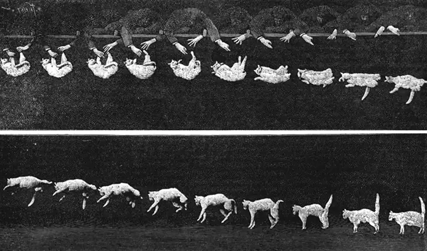
The problem before us, then, is to determine what part of an extended object is obeying Newton’s second law when an external force is applied and to determine how the motion of the object as a whole is affected by both the internal and external forces.
Be warned: To treat this new situation correctly, we must be rigorous and completely general. We won’t make any assumptions about the nature of the object, or of its constituent particles, or either the internal or external forces. Thus, the arguments will be complex.
Internal and External Forces¶
Suppose we have an extended object of mass M, made of N interacting particles. Let’s label their masses as \(m_{j}\), where \(j=1,2,3,\ldots,N\). Note that
If we apply some net external force \({\mathbf{\vec{F}}}_{\text{ext}}\) on the object, every particle experiences some “share” or some fraction of that external force. Let:
Notice that these fractions of the total force are not necessarily equal; indeed, they virtually never are. (They can be, but they usually aren’t.) In general, therefore,
Next, we assume that each of the particles making up our object can interact with (apply forces on) every other particle of the object. We won’t try to guess what kind of forces they are; but since these forces are the result of particles of the object acting on other particles of the same object, we refer to them as internal forces \({\mathbf{\vec{f}}}_{j}^{\text{int}}\); thus:
\({\mathbf{\vec{f}}}_{j}^{\text{int}}=\) the net internal force that the jth particle experiences from all the other particles that make up the object.
Now, the net force, internal plus external, on the jth particle is the vector sum of these:
where again, this is for all N particles; \(j=1,2,3,\ldots,N\).
As a result of this fractional force, the momentum of each particle gets changed:
The net force \(\mathbf{\vec{F}}\) on the object is the vector sum of these forces:
This net force changes the momentum of the object as a whole, and the net change of momentum of the object must be the vector sum of all the individual changes of momentum of all of the particles:
Combining Equation 9.22 and Equation 9.23 gives
Let’s now think about these summations. First consider the internal forces term; remember that each \({\mathbf{\vec{f}}}_{j}^{\text{int}}\) is the force on the jth particle from the other particles in the object. But by Newton’s third law, for every one of these forces, there must be another force that has the same magnitude, but the opposite sign (points in the opposite direction). These forces do not cancel; however, that’s not what we’re doing in the summation. Rather, we’re simply mathematically adding up all the internal force vectors. That is, in general, the internal forces for any individual part of the object won’t cancel, but when all the internal forces are added up, the internal forces must cancel in pairs. It follows, therefore, that the sum of all the internal forces must be zero:
(This argument is subtle, but crucial; take plenty of time to completely understand it.)
For the external forces, this summation is simply the total external force that was applied to the whole object:
As a result,
equation callout
This is an important result. Equation 9.25 tells us that the total change of momentum of the entire object (all N particles) is due only to the external forces; the internal forces do not change the momentum of the object as a whole. This is why you can’t lift yourself in the air by standing in a basket and pulling up on the handles: For the system of you + basket, your upward pulling force is an internal force.
Force and Momentum¶
Remember that our actual goal is to determine the equation of motion for the entire object (the entire system of particles). To that end, let’s define:
\({\mathbf{\vec{p}}}_{\text{CM}}=\) the total momentum of the system of N particles (the reason for the subscript will become clear shortly)
Then we have
and therefore Equation 9.25 can be written simply as
equation callout
Since this change of momentum is caused by only the net external force, we have dropped the “ext” subscript.
This is Newton’s second law, but now for the entire extended object. If this feels a bit anticlimactic, remember what is hiding inside it: \({\mathbf{\vec{p}}}_{\text{CM}}\) is the vector sum of the momentum of (in principle) hundreds of thousands of billions of billions of particles \((6.02\:\times\:{10}^{23})\), all caused by one simple net external force—a force that you can calculate.
Center of Mass¶
Our next task is to determine what part of the extended object, if any, is obeying Equation 9.26.
It’s tempting to take the next step; does the following equation mean anything?
If it does mean something (acceleration of what, exactly?), then we could write
and thus
which follows because the derivative of a sum is equal to the sum of the derivatives.
Now, \({\mathbf{\vec{p}}}_{j}\) is the momentum of the jth particle. Defining the positions of the constituent particles (relative to some coordinate system) as \({\mathbf{\vec{r}}}_{\mathbf{j}}=(x_{j},y_{j},z_{j})\), we thus have
Substituting back, we obtain
Dividing both sides by M (the total mass of the extended object) gives us
equation callout
Thus, the point in the object that traces out the trajectory dictated by the applied force in Equation 9.27 is inside the parentheses in Equation 9.28.
Looking at this calculation, notice that (inside the parentheses) we are calculating the product of each particle’s mass with its position, adding all N of these up, and dividing this sum by the total mass of particles we summed. This is reminiscent of an average; inspired by this, we’ll (loosely) interpret it to be the weighted average position of the mass of the extended object. It’s actually called the center of mass of the object. Notice that the position of the center of mass has units of meters; that suggests a definition:
equation callout
So, the point that obeys Equation 9.26 (and therefore Equation 9.27 as well) is the center of mass of the object, which is located at the position vector \({\mathbf{\vec{r}}}_{\text{CM}}\).
It may surprise you to learn that there does not have to be any actual mass at the center of mass of an object. For example, a hollow steel sphere with a vacuum inside it is spherically symmetrical (meaning its mass is uniformly distributed about the center of the sphere); all of the sphere’s mass is out on its surface, with no mass inside. But it can be shown that the center of mass of the sphere is at its geometric center, which seems reasonable. Thus, there is no mass at the position of the center of mass of the sphere. (Another example is a doughnut.) The procedure to find the center of mass is illustrated in Figure 9.27.
![An illustration of finding the center of mass of three particles. Figure a shows the locations of the three particles in he x y plane. m 1 is in the second quadrant. Vector r 1 starts at the origin and extends to the location of m 1. m 2 is in the first quadrant. Vector r 2 starts at the origin and extends to the location of m 2. m 1 is in the fourth quadrant. Vector r 3 starts at the origin and extends to the location of m 3. Vector r 1 is the shortest of the vectors in the diagram, and r 2 is the longest. Figure b shows the vectors m 1 r 1, m 2 r 2 and m 3 r 3. Vector m 1 r 1 points in the same direction as vector r 1 in figure a, but is longer than r 1. Vector m 2 r 2 points in the same direction as vector r 1 in figure a, but is shorter than r 2. . Vector m 3 r 3 points in the same direction as vector r 3 in figure a, but is shorter than r 3. Vector m 1 r 1 is the longest vector in the diagram. Vectors m 2 r 2 and m 3 r 3 appear to be of equal length. Figure c shows the vector sum of m 1 r 1, m2 r 2 and m 3 r 3, which have been drawn in blue and placed head to tail. The red vector m 1 r 1 plus m 2 r 2 plus m 3 r 3 is the vector from the tail of m 1 r 1 to the head of m 3 r 3. Figure d shows the red vector m 1 r 1 plus m 2 r 2 plus m 3 r 3 all divded by the sum m 1 plus m 2 plus m 3. This vector is in the same direction as the vecor m 1 r 1 plus m 2 r 2 plus m 3 r 3 in figure c, but shorter.](img/cnx-uphysics-09-06-cm.webp)
Since \({\mathbf{\vec{r}}}_{j}=x_{j}\mathbf{\hat{i}}+y_{j}\mathbf{\hat{j}}+z_{j}\mathbf{\hat{k}}\), it follows that:
and thus
Therefore, you can calculate the components of the center of mass vector individually.
Finally, to complete the kinematics, the instantaneous velocity of the center of mass is calculated exactly as you might suspect:
equation callout
and this, like the position, has x-, y-, and z-components.
To calculate the center of mass in actual situations, we recommend the following procedure:
Problem-Solving Strategy: Calculating the Center of Mass
The center of mass of an object is a position vector. Thus, to calculate it, do these steps:
- Define your coordinate system. Typically, the origin is placed at the location of one of the particles. This is not required, however.
- Determine the x, y, z-coordinates of each particle that makes up the object.
- Determine the mass of each particle, and sum them to obtain the total mass of the object. Note that the mass of the object at the origin must be included in the total mass.
- Calculate the x-, y-, and z-components of the center of mass vector, using Equation 9.30, Equation 9.31, and Equation 9.32.
- If required, use the Pythagorean theorem to determine its magnitude.
Here are two examples that will give you a feel for what the center of mass is.
Example 9.16 Center of Mass of the Earth-Moon System
Using data from text appendix, determine how far the center of mass of the Earth-moon system is from the center of Earth. Compare this distance to the radius of Earth, and comment on the result. Ignore the other objects in the solar system.
Strategy
We get the masses and separation distance of the Earth and moon, impose a coordinate system, and use Equation 9.29 with just \(N=2\) objects. We use a subscript “e” to refer to Earth, and subscript “m” to refer to the moon.
Solution
Define the origin of the coordinate system as the center of Earth. Then, with just two objects, Equation 9.29 becomes
From Appendix D,
We defined the center of Earth as the origin, so \(r_{\text{e}}=\text{0 m}\). Inserting these into the equation for R gives
Significance
The radius of Earth is \(6.37\:\times\:{10}^{6}\:\text{m}\), so the center of mass of the Earth-moon system is (6.37 − 4.64) \(\times\:{10}^{6}\:\text{m}=1.73\:\times\:{10}^{6}\:\text{m}=1730\:\text{km}\) (roughly 1080 miles) below the surface of Earth. The location of the center of mass is shown (not to scale).
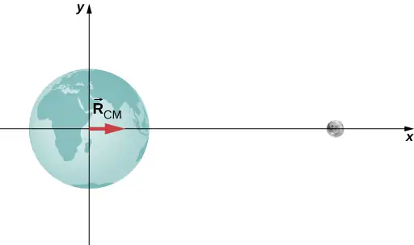
Check Your Understanding
Suppose we included the sun in the system. Approximately where would the center of mass of the Earth-moon-sun system be located? (Feel free to actually calculate it.)
Answer
The average radius of Earth’s orbit around the Sun is \(1.496\:\times\:{10}^{9}\:\text{m}\). Taking the Sun to be the origin, and noting that the mass of the Sun is approximately the same as the masses of the Sun, Earth, and Moon combined, the center of mass of the Earth + Moon system and the Sun is
\(\begin{array}{cc} R_{\text{CM}} & =\frac{m_{\mathrm{Sun}}R_{\mathrm{Sun}}+m_{\text{em}}R_{\text{em}}}{m_{\mathrm{Sun}}} \\ & =\frac{(1.989\:\times\:{10}^{30}\:\text{kg})(0)+(5.97\:\times\:{10}^{24}\:\text{kg}+7.36\:\times\:{10}^{22}\:\text{kg})(1.496\:\times\:{10}^{9}\:\text{m})}{1.989\:\times\:{10}^{30}\:\text{kg}} \\ & =4.6\:\text{km} \end{array}\)
Thus, the center of mass of the Sun, Earth, Moon system is 4.6 km from the center of the Sun.
Example 9.17 Center of Mass of a Salt Crystal
Figure 9.28 shows a single crystal of sodium chloride—ordinary table salt. The sodium and chloride ions form a single unit, NaCl. When multiple NaCl units group together, they form a cubic lattice. The smallest possible cube (called the unit cell) consists of four sodium ions and four chloride ions, alternating. The length of one edge of this cube (i.e., the bond length) is \(2.36\:\times\:{10}^{-10}\:\text{m}\). Find the location of the center of mass of the unit cell. Specify it either by its coordinates \((r_{\text{CM,}x},r_{\text{CM,}y},r_{\text{CM,}z})\), or by \(r_{\text{CM}}\) and two angles.
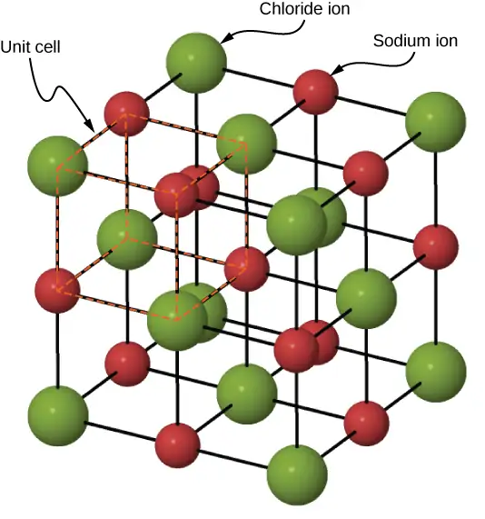
Strategy
We can look up all the ion masses. If we impose a coordinate system on the unit cell, this will give us the positions of the ions. We can then apply Equation 9.30, Equation 9.31, and Equation 9.32 (along with the Pythagorean theorem).
Solution
Define the origin to be at the location of the chloride ion at the bottom left of the unit cell. Figure 9.29 shows the coordinate system.
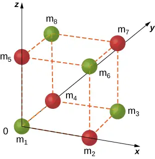
There are eight ions in this crystal, so N = 8:
The mass of each of the chloride ions is
so we have
For the sodium ions,
The total mass of the unit cell is therefore
From the geometry, the locations are
Substituting:
Similar calculations give \(r_{\text{CM,}y}=r_{\text{CM,}z}=1.18\:\times\:{10}^{-10}\:\text{m}\) (you could argue that this must be true, by symmetry, but it’s a good idea to check).
Significance
Although this is a great exercise to determine the center of mass given a Chloride ion at the origin, in fact the origin could be chosen at any location. Therefore, there is no meaningful application of the center of mass of a unit cell beyond as an exercise.
Check Your Understanding
Suppose you have a macroscopic salt crystal (that is, a crystal that is large enough to be visible with your unaided eye). It is made up of a huge number of unit cells. Is the center of mass of this crystal necessarily at the geometric center of the crystal?
Answer
On a macroscopic scale, the size of a unit cell is negligible and the crystal mass may be considered to be distributed homogeneously throughout the crystal. Thus,
\({\mathbf{\vec{r}}}_{\text{CM}}=\frac{1}{M}\displaystyle \sum_{j=1}^{N}m_{j}{\vec{r}}_{j}=\frac{1}{M}\displaystyle \sum_{j=1}^{N}m{\vec{r}}_{j}=\frac{m}{M}\displaystyle \sum_{j=1}^{N}{\vec{r}}_{j}=\frac{Nm}{M}\:\frac{\displaystyle \sum_{j=1}^{N}{\vec{r}}_{j}}{N}\)
where we sum over the number N of unit cells in the crystal and m is the mass of a unit cell. Because Nm = M, we can write
\({\mathbf{\vec{r}}}_{\text{CM}}=\frac{m}{M}\displaystyle \sum_{j=1}^{N}{\vec{r}}_{j}=\frac{Nm}{M}\:\frac{\displaystyle \sum_{j=1}^{N}{\vec{r}}_{j}}{N}=\frac{1}{N}\displaystyle \sum_{j=1}^{N}{\vec{r}}_{j}.\)
This is the definition of the geometric center of the crystal, so the center of mass is at the same point as the geometric center.
Two crucial concepts come out of these examples:
- As with all problems, you must define your coordinate system and origin. For center-of-mass calculations, it often makes sense to choose your origin to be located at one of the masses of your system. That choice automatically defines its distance in Equation 9.29 to be zero. However, you must still include the mass of the object at your origin in your calculation of M, the total mass Equation 9.19. In the Earth-moon system example, this means including the mass of Earth. If you hadn’t, you’d have ended up with the center of mass of the system being at the center of the moon, which is clearly wrong.
- In the second example (the salt crystal), notice that there is no mass at all at the location of the center of mass. This is an example of what we stated above, that there does not have to be any actual mass at the center of mass of an object.
Center of Mass of Continuous Objects¶
If the object in question has its mass distributed uniformly in space, rather than as a collection of discrete particles, then \(m_{j}\rightarrow dm\), and the summation becomes an integral:
equation callout
In this context, r is a characteristic dimension of the object (the radius of a sphere, the length of a long rod). To generate an integrand that can actually be calculated, you need to express the differential mass element dm as a function of the mass density of the continuous object, and the dimension r. An example will clarify this.
Example 9.18 CM of a Uniform Thin Hoop
Find the center of mass of a uniform thin hoop (or ring) of mass M and radius r.
Strategy
First, the hoop’s symmetry suggests the center of mass should be at its geometric center. If we define our coordinate system such that the origin is located at the center of the hoop, the integral should evaluate to zero.
We replace dm with an expression involving the density of the hoop and the radius of the hoop. We then have an expression we can actually integrate. Since the hoop is described as “thin,” we treat it as a one-dimensional object, neglecting the thickness of the hoop. Therefore, its density is expressed as the number of kilograms of material per meter. Such a density is called a linear mass density, and is given the symbol \(\lambda\); this is the Greek letter “lambda,” which is the equivalent of the English letter “l” (for “linear”).
Since the hoop is described as uniform, this means that the linear mass density \(\lambda\) is constant. Thus, to get our expression for the differential mass element dm, we multiply \(\lambda\) by a differential length of the hoop, substitute, and integrate (with appropriate limits for the definite integral).
Solution
First, define our coordinate system and the relevant variables (Figure 9.30).
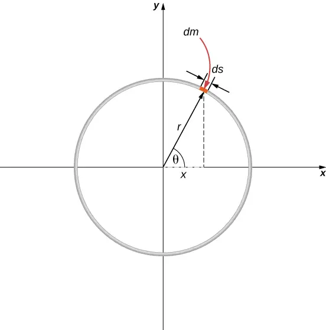
The center of mass is calculated with Equation 9.34:
We have to determine the limits of integration a and b. Expressing \(\mathbf{\vec{r}}\) in component form gives us
In the diagram, we highlighted a piece of the hoop that is of differential length ds; it therefore has a differential mass \(dm=\lambda ds\). Substituting:
However, the arc length ds subtends a differential angle \(d\theta\), so we have
and thus
One more step: Since \(\lambda\) is the linear mass density, it is computed by dividing the total mass by the length of the hoop:
giving us
Notice that the variable of integration is now the angle \(\theta\). This tells us that the limits of integration (around the circular hoop) are \(\theta=\text{0 to}\:\theta=2\pi\), so \(a=0\) and \(b=2\pi\). Also, for convenience, we separate the integral into the x- and y-components of \({\mathbf{\vec{r}}}_{\text{CM}}\). The final integral expression is
as expected.
Center of Mass and Conservation of Momentum¶
How does all this connect to conservation of momentum?
Suppose you have N objects with masses \(m_{1},m_{2},m_{3},...m_{N}\) and initial velocities \({\mathbf{\vec{v}}}_{1},{\mathbf{\vec{v}}}_{2},{\mathbf{\vec{v}}}_{3},...{,}{\mathbf{\vec{v}}}_{N}\). The center of mass of the objects is
Its velocity is
and thus the initial momentum of the center of mass is
After these masses move and interact with each other, the momentum of the center of mass is
But conservation of momentum tells us that the right-hand side of both equations must be equal, which says
equation callout
This result implies that conservation of momentum is expressed in terms of the center of mass of the system. Notice that as an object moves through space with no net external force acting on it, an individual particle of the object may accelerate in various directions, with various magnitudes, depending on the net internal force acting on that object at any time. (Remember, it is only the vector sum of all the internal forces that vanishes, not the internal force on a single particle.) Thus, such a particle’s momentum will not be constant—but the momentum of the entire extended object will be, in accord with Equation 9.36.
Equation 9.36 implies another important result: Since M represents the mass of the entire system of particles, it is necessarily constant. (If it isn’t, we don’t have a closed system, so we can’t expect the system’s momentum to be conserved.) As a result, Equation 9.36 implies that, for a closed system,
equation callout
That is to say, in the absence of an external force, the velocity of the center of mass never changes.
You might be tempted to shrug and say, “Well yes, that’s just Newton’s first law,” but remember that Newton’s first law discusses the constant velocity of a particle, whereas Equation 9.37 applies to the center of mass of a (possibly vast) collection of interacting particles, and that there may not be any particle at the center of mass at all! So, this really is a remarkable result.
Example 9.19 Fireworks Display
When a fireworks rocket explodes, thousands of glowing fragments fly outward in all directions, and fall to Earth in an elegant and beautiful display (Figure 9.31). Describe what happens, in terms of conservation of momentum and center of mass.
The picture shows radial symmetry about the central points of the explosions; this suggests the idea of center of mass. We can also see the parabolic motion of the glowing particles; this brings to mind projectile motion ideas.
Solution
Initially, the fireworks rocket is launched and flies more or less straight upward; this is the cause of the more-or-less-straight, white trail going high into the sky below the explosion in the upper-right of the picture (the yellow explosion). This trail is not parabolic because the explosive shell, during its launch phase, is actually a rocket; the impulse applied to it by the ejection of the burning fuel applies a force on the shell during the rise-time interval. (This is a phenomenon we will study in the next section.) The shell has multiple forces on it; thus, it is not in free-fall prior to the explosion.
At the instant of the explosion, the thousands of glowing fragments fly outward in a radially symmetrical pattern. The symmetry of the explosion is the result of all the internal forces summing to zero \(\left( \displaystyle \sum_{j}{\mathbf{\vec{f}}}_{j}^{\text{int}}=0 \right);\) for every internal force, there is another that is equal in magnitude and opposite in direction.
However, as we learned above, these internal forces cannot change the momentum of the center of mass of the (now exploded) shell. Since the rocket force has now vanished, the center of mass of the shell is now a projectile (the only force on it is gravity), so its trajectory does become parabolic. The two red explosions on the left show the path of their centers of mass at a slightly longer time after explosion compared to the yellow explosion on the upper right.
In fact, if you look carefully at all three explosions, you can see that the glowing trails are not truly radially symmetric; rather, they are somewhat denser on one side than the other. Specifically, the yellow explosion and the lower middle explosion are slightly denser on their right sides, and the upper-left explosion is denser on its left side. This is because of the momentum of their centers of mass; the differing trail densities are due to the momentum each piece of the shell had at the moment of its explosion. The fragment for the explosion on the upper left of the picture had a momentum that pointed upward and to the left; the middle fragment’s momentum pointed upward and slightly to the right; and the right-side explosion clearly upward and to the right (as evidenced by the white rocket exhaust trail visible below the yellow explosion).
Finally, each fragment is a projectile on its own, thus tracing out thousands of glowing parabolas.
Significance
In the discussion above, we said, “…the center of mass of the shell is now a projectile (the only force on it is gravity)….” This is not quite accurate, for there may not be any mass at all at the center of mass; in which case, there could not be a force acting on it. This is actually just verbal shorthand for describing the fact that the gravitational forces on all the particles act so that the center of mass changes position exactly as if all the mass of the shell were always located at the position of the center of mass.
Check Your Understanding
How would the firework display change in deep space, far away from any source of gravity?
Answer
The explosions would essentially be spherically symmetric, because gravity would not act to distort the trajectories of the expanding projectiles.
You may sometimes hear someone describe an explosion by saying something like, “the fragments of the exploded object always move in a way that makes sure that the center of mass continues to move on its original trajectory.” This makes it sound as if the process is somewhat magical: how can it be that, in every explosion, it always works out that the fragments move in just the right way so that the center of mass’ motion is unchanged? Phrased this way, it would be hard to believe no explosion ever does anything differently.
The explanation of this apparently astonishing coincidence is: We defined the center of mass precisely so this is exactly what we would get. Recall that first we defined the momentum of the system:
We then concluded that the net external force on the system (if any) changed this momentum:
and then—and here’s the point—we defined an acceleration that would obey Newton’s second law. That is, we demanded that we should be able to write
which requires that
where the quantity inside the parentheses is the center of mass of our system. So, it’s not astonishing that the center of mass obeys Newton’s second law; we defined it so that it would.
9.7 Rocket Propulsion¶
Learning Objectives
By the end of this section, you will be able to:
- Describe the application of conservation of momentum when the mass changes with time, as well as the velocity
- Calculate the speed of a rocket in empty space, at some time, given initial conditions
- Calculate the speed of a rocket in Earth’s gravity field, at some time, given initial conditions
Now we deal with the case where the mass of an object is changing. We analyze the motion of a rocket, which changes its velocity (and hence its momentum) by ejecting burned fuel gases, thus causing it to accelerate in the opposite direction of the velocity of the ejected fuel (see Figure 9.32). Specifically: A fully fueled rocket ship in deep space has a total mass \(m_{0}\) (this mass includes the initial mass of the fuel). At some moment in time, the rocket has a velocity \(\mathbf{\vec{v}}\) and mass m; this mass is a combination of the mass of the empty rocket and the mass of the remaining unburned fuel it contains. (We refer to m as the “instantaneous mass” and \(\mathbf{\vec{v}}\) as the “instantaneous velocity.”) The rocket accelerates by burning the fuel it carries and ejecting the burned exhaust gases. If the burn rate of the fuel is constant, and the velocity at which the exhaust is ejected is also constant, what is the change of velocity of the rocket as a result of burning all of its fuel?
Physical Analysis¶
Here’s a description of what happens, so that you get a feel for the physics involved.
- As the rocket engines operate, they are continuously ejecting burned fuel gases, which have both mass and velocity, and therefore some momentum. By conservation of momentum, the rocket’s momentum changes by this same amount (with the opposite sign). We will assume the burned fuel is being ejected at a constant rate, which means the rate of change of the rocket’s momentum is also constant. By Equation 9.9, this represents a constant force on the rocket.
- However, as time goes on, the mass of the rocket (which includes the mass of the remaining fuel) continuously decreases. Thus, even though the force on the rocket is constant, the resulting acceleration is not; it is continuously increasing.
- So, the total change of the rocket’s velocity will depend on the amount of mass of fuel that is burned, and that dependence is not linear.
The problem has the mass and velocity of the rocket changing; also, the total mass of ejected gases is changing. If we define our system to be the rocket + fuel, then this is a closed system (since the rocket is in deep space, there are no external forces acting on this system); as a result, momentum is conserved for this system. Thus, we can apply conservation of momentum to answer the question (Figure 9.33).
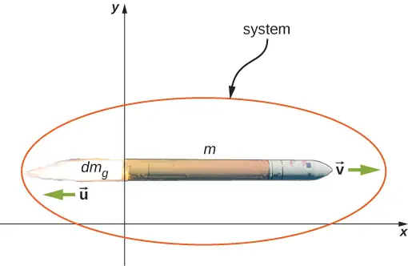
At the same moment that the total instantaneous rocket mass is m (i.e., m is the mass of the rocket body plus the mass of the fuel at that point in time), we define the rocket’s instantaneous velocity to be \(\mathbf{\vec{v}}=v\mathbf{\hat{i}}\) (in the +x-direction); this velocity is measured relative to an inertial reference system (the Earth, for example). Thus, the initial momentum of the system is
\({\mathbf{\vec{p}}}_{\text{i}}=mv\mathbf{\hat{i}}.\)
The rocket’s engines are burning fuel at a constant rate and ejecting the exhaust gases in the −x-direction. During an infinitesimal time interval dt, the engines eject a (positive) infinitesimal mass of gas \(dm_{g}\) at velocity \(\mathbf{\vec{u}}=-u\mathbf{\hat{i}}\); note that although the rocket velocity \(v\mathbf{\hat{i}}\) is measured with respect to Earth, the exhaust gas velocity is measured with respect to the (moving) rocket. Measured with respect to the Earth, therefore, the exhaust gas has velocity \((v-u)\mathbf{\hat{i}}\).
As a consequence of the ejection of the fuel gas, the rocket’s mass decreases by \(dm_{g}\), and its velocity increases by \(dv\mathbf{\hat{i}}\). Therefore, including both the change for the rocket and the change for the exhaust gas, the final momentum of the system is
Since all vectors are in the x-direction, we drop the vector notation. Applying conservation of momentum, we obtain
Now, \(dm_{g}\) and dv are each very small; thus, their product \(dm_{g}dv\) is very, very small, much smaller than the other two terms in this expression. We neglect this term, therefore, and obtain:
Our next step is to remember that, since \(dm_{g}\) represents an increase in the mass of ejected gases, it must also represent a decrease of mass of the rocket:
Replacing this, we have
or
Integrating from the initial mass m0 to the final mass m of the rocket gives us the result we are after:
and thus our final answer is
equation callout
This result is called the rocket equation. It was originally derived by the Russian rocket scientist Konstantin Tsiolkovsky in 1897. It gives us the change of velocity that the rocket obtains from burning a mass of fuel that decreases the total rocket mass from \(m_{0}\) down to m. As expected, the relationship between \(\Delta v\) and the change of mass of the rocket is nonlinear.
Problem-Solving Strategy: Rocket Propulsion
In rocket problems, the most common questions are finding the change of velocity due to burning some amount of fuel for some amount of time; or to determine the acceleration that results from burning fuel.
- To determine the change of velocity, use the rocket equation Equation 9.38.
- To determine the acceleration, determine the force by using the impulse-momentum theorem, using the rocket equation to determine the change of velocity.
Example 9.20 Thrust on a Spacecraft
A spacecraft is moving in gravity-free space along a straight path when its pilot decides to accelerate forward. He turns on the thrusters, and burned fuel is ejected at a constant rate of \(2.0\:\times\:{10}^{2}\:\text{kg/s}\), at a speed (relative to the rocket) of \(2.5\:\times\:{10}^{2}\:\text{m/s}\). The initial mass of the spacecraft and its unburned fuel is \(2.0\:\times\:{10}^{4}\:\text{kg}\), and the thrusters are on for 30 s.
- What is the thrust (the force applied to the rocket by the ejected fuel) on the spacecraft?
- What is the spacecraft’s acceleration as a function of time?
- What are the spacecraft’s accelerations at t = 0, 15, 30, and 35 s?
Strategy
- The force on the spacecraft is equal to the rate of change of the momentum of the fuel.
- Knowing the force from part (a), we can use Newton’s second law to calculate the consequent acceleration. The key here is that, although the force applied to the spacecraft is constant (the fuel is being ejected at a constant rate), the mass of the spacecraft isn’t; thus, the acceleration caused by the force won’t be constant. We expect to get a function a(t), therefore.
- We’ll use the function we obtain in part (b), and just substitute the numbers given. Important: We expect that the acceleration will get larger as time goes on, since the mass being accelerated is continuously decreasing (fuel is being ejected from the rocket).
Solution
a. The momentum of the ejected fuel gas is
The ejection velocity \(v=2.5\:\times\:{10}^{2}\text{m/s}\) is constant, and therefore the force is
Now, \(\frac{dm_{g}}{dt}\) is the rate of change of the mass of the fuel; the problem states that this is \(2.0\:\times\:{10}^{2}\text{kg/s}\). Substituting, we get
b. Above, we defined m to be the combined mass of the empty rocket plus however much unburned fuel it contained: \(m=m_{R}+m_{g}\). From Newton’s second law,
The force is constant and the empty rocket mass \(m_{R}\) is constant, but the fuel mass \(m_{g}\) is decreasing at a uniform rate; specifically:
This gives us
Notice that, as expected, the acceleration is a function of time. Substituting the given numbers:
c. At \(t=0\:\text{s}\):
At \(t=15\:\text{s},\:a(15\:\text{s})={2.9\:\text{m/s}}^{2}\).
At \(t=30\:\text{s},\:a(30\:\text{s})=3.6\:\text{m/s}^{2}\).
Acceleration is increasing, as we expected.
At \(t=35\:\text{s}\) (and at any time after \(t=30\:\text{s}\)), the acceleration is \(0\:\text{m/s}^{2}\) since the thrusters stopped working and thus no external forces are acting on the spacecraft.
Significance
Notice that the acceleration is not constant; as a result, any dynamical quantities must be calculated either using integrals, or (more easily) conservation of total energy.
Check Your Understanding
What is the physical difference (or relationship) between \(\frac{dm}{dt}\) and \(\frac{dm_{g}}{dt}\) in this example?
Answer
The notation \(m_{g}\) stands for the mass of the fuel and m stands for the mass of the rocket plus the initial mass of the fuel. Note that \(m_{g}\) changes with time, so we write it as \(m_{g}(t)\). Using \(m_{R}\) as the mass of the rocket with no fuel, the total mass of the rocket plus fuel is \(m=m_{R}+m_{g}(t)\). Differentiation with respect to time gives
\(\frac{dm}{dt}=\frac{dm_{R}}{dt}+\frac{dm_{g}(t)}{dt}=\frac{dm_{g}(t)}{dt}\)
where we used \(\frac{dm_{R}}{dt}=0\) because the mass of the rocket does not change. Thus, time rate of change of the mass of the rocket is the same as that of the fuel.
Rocket in a Gravitational Field¶
Let’s now analyze the velocity change of the rocket during the launch phase, from the surface of Earth. To keep the math manageable, we’ll restrict our attention to distances for which the acceleration caused by gravity can be treated as a constant g.
The analysis is similar, except that now there is an external force of \(\mathbf{\vec{F}}=-mg\mathbf{\hat{j}}\) acting on our system. This force applies an impulse \(d\mathbf{\vec{J}}=\mathbf{\vec{F}}dt=-mgdt\mathbf{\hat{j}}\), which is equal to the change of momentum. This gives us
and so
where we have again neglected the term \(dm_{g}dv\) and dropped the vector notation. Next we replace \(dm_{g}\) with \(-dm\):
Dividing through by m gives
and integrating, we have
equation callout
Unsurprisingly, the rocket’s velocity is affected by the (constant) acceleration of gravity.
Remember that \(\Delta t\) is the burn time of the fuel. Now, in the absence of gravity, Equation 9.38 implies that it makes no difference how much time it takes to burn the entire mass of fuel; the change of velocity does not depend on \(\Delta t\). However, in the presence of gravity, it matters a lot. The −g\(\Delta t\) term in Equation 9.39 tells us that the longer the burn time is, the smaller the rocket’s change of velocity will be. This is the reason that the launch of a rocket is so spectacular at the first moment of liftoff: It’s essential to burn the fuel as quickly as possible, to get as large a \(\Delta v\) as possible.
Chapter Review¶
Key Terms¶
- center of mass
- weighted average position of the mass
- closed system
- system for which the mass is constant and the net external force on the system is zero
- elastic
- collision that conserves kinetic energy
- explosion
- single object breaks up into multiple objects; kinetic energy is not conserved in explosions
- external force
- force applied to an extended object that changes the momentum of the extended object as a whole
- impulse
- effect of applying a force on a system for a time interval; this time interval is usually small, but does not have to be
- impulse-momentum theorem
- change of momentum of a system is equal to the impulse applied to the system
- inelastic
- collision that does not conserve kinetic energy
- internal force
- force that the simple particles that make up an extended object exert on each other. Internal forces can be attractive or repulsive
- Law of Conservation of Momentum
- total momentum of a closed system cannot change
- linear mass density
- \(\lambda\), expressed as the number of kilograms of material per meter
- momentum
- measure of the quantity of motion that an object has; it takes into account both how fast the object is moving, and its mass; specifically, it is the product of mass and velocity; it is a vector quantity
- perfectly inelastic
- collision after which all objects are motionless, the final kinetic energy is zero, and the loss of kinetic energy is a maximum
- rocket equation
- derived by the Soviet physicist Konstantin Tsiolkovsky in 1897, it gives us the change of velocity that the rocket obtains from burning a mass of fuel that decreases the total rocket mass from \(m_{\text{i}}\) down to m
- system
- object or collection of objects whose motion is currently under investigation; however, your system is defined at the start of the problem, you must keep that definition for the entire problem
Key Equations¶
| Definition of momentum | \(\mathbf{\vec{p}}=m\mathbf{\vec{v}}\) |
| Impulse | \(\vec{J}\equiv\displaystyle \int_{t_{\text{i}}}^{t_{\text{f}}}\vec{F}(t)dt\:\text{or}\:\mathbf{\vec{J}}={\mathbf{\vec{F}}}_{\text{ave}}\Delta t\) |
| Impulse-momentum theorem | \(\mathbf{\vec{J}}=\Delta\mathbf{\vec{p}}\) |
| Average force from momentum | \(\mathbf{\vec{F}}=\frac{\Delta\mathbf{\vec{p}}}{\Delta t}\) |
| Instantaneous force from momentum (Newton’s second law) |
\(\mathbf{\vec{F}}(t)=\frac{d\mathbf{\vec{p}}}{dt}\) |
| Conservation of momentum | \(\frac{d{\mathbf{\vec{p}}}_{\mathbf{1}}}{dt}+\frac{d{\mathbf{\vec{p}}}_{\mathbf{2}}}{dt}=0\;\text{or}\;{\mathbf{\vec{p}}}_{\mathbf{1}}+{\mathbf{\vec{p}}}_{\mathbf{2}}=\text{constant}\) |
| Generalized conservation of momentum | \(\displaystyle \sum_{j=1}^{N}{\mathbf{\vec{p}}}_{\mathbf{j}}=\text{constant}\) |
| Conservation of momentum in two dimensions | \(\begin{array}{c} p_{\text{f},x}=p_{\text{1,i},x}+p_{\text{2,i},x} \\ p_{\text{f},y}=p_{\text{1,i},y}+p_{\text{2,i},y} \end{array}\) |
| External forces | \({\mathbf{\vec{F}}}_{\text{ext}}=\displaystyle \sum_{j=1}^{N}\frac{d{\mathbf{\vec{p}}}_{j}}{dt}\) |
| Newton’s second law for an extended object | \(\mathbf{\vec{F}}=\frac{d{\mathbf{\vec{p}}}_{\text{CM}}}{dt}\) |
| Acceleration of the center of mass | \({\mathbf{\vec{a}}}_{\text{CM}}=\frac{d^{2}}{dt^{2}}\left( \frac{1}{M}\displaystyle \sum_{j=1}^{N}m_{j}{\mathbf{\vec{r}}}_{j} \right)=\frac{1}{M}\displaystyle \sum_{j=1}^{N}m_{j}{\mathbf{\vec{a}}}_{j}\) |
| Position of the center of mass for a system of particles |
\({\mathbf{\vec{r}}}_{\text{CM}}\equiv\frac{1}{M}\displaystyle \sum_{j=1}^{N}m_{j}{\mathbf{\vec{r}}}_{j}\) |
| Velocity of the center of mass | \({\mathbf{\vec{v}}}_{\text{CM}}=\frac{d}{dt}\left( \frac{1}{M}\displaystyle \sum_{j=1}^{N}m_{j}{\mathbf{\vec{r}}}_{j} \right)=\frac{1}{M}\displaystyle \sum_{j=1}^{N}m_{j}{\mathbf{\vec{v}}}_{j}\) |
| Position of the center of mass of a continuous object |
\({\mathbf{\vec{r}}}_{\text{CM}}\equiv\frac{1}{M}\displaystyle \int\mathbf{\vec{r}}\:dm\) |
| Rocket equation | \(\Delta v=u\:\ln\left( \frac{m_{\text{i}}}{m} \right)\) |
Summary¶
9.1 Linear Momentum¶
- The motion of an object depends on its mass as well as its velocity. Momentum is a concept that describes this. It is a useful and powerful concept, both computationally and theoretically. The SI unit for momentum is kg\(\cdot\) m/s.
9.2 Impulse and Collisions¶
- When a force is applied on an object for some amount of time, the object experiences an impulse.
- This impulse is equal to the object’s change of momentum.
- Newton’s second law in terms of momentum states that the net force applied to a system equals the rate of change of the momentum that the force causes.
9.3 Conservation of Linear Momentum¶
- The law of conservation of momentum says that the momentum of a closed system is constant in time (conserved).
- A closed (or isolated) system is defined to be one for which the mass remains constant, and the net external force is zero.
- The total momentum of a system is conserved only when the system is closed.
9.4 Types of Collisions¶
- An elastic collision is one that conserves kinetic energy.
- An inelastic collision does not conserve kinetic energy.
- Momentum is conserved regardless of whether or not kinetic energy is conserved.
- Analysis of kinetic energy changes and conservation of momentum together allow the final velocities to be calculated in terms of initial velocities and masses in one-dimensional, two-body collisions.
9.5 Collisions in Multiple Dimensions¶
- The approach to two-dimensional collisions is to choose a convenient coordinate system and break the motion into components along perpendicular axes.
- Momentum is conserved in both directions simultaneously and independently.
- The Pythagorean theorem gives the magnitude of the momentum vector using the x- and y-components, calculated using conservation of momentum in each direction.
9.6 Center of Mass¶
- An extended object (made up of many objects) has a defined position vector called the center of mass.
- The center of mass can be thought of, loosely, as the average location of the total mass of the object.
- The center of mass of an object traces out the trajectory dictated by Newton’s second law, due to the net external force.
- The internal forces within an extended object cannot alter the momentum of the extended object as a whole.
9.7 Rocket Propulsion¶
- A rocket is an example of conservation of momentum where the mass of the system is not constant, since the rocket ejects fuel to provide thrust.
- The rocket equation gives us the change of velocity that the rocket obtains from burning a mass of fuel that decreases the total rocket mass.
Conceptual Questions¶
9.1 Linear Momentum¶
1. An object that has a small mass and an object that has a large mass have the same momentum. Which object has the largest kinetic energy?
Answer
Since \(K=p^{2}\text{/}2m\), then if the momentum is fixed, the object with smaller mass has more kinetic energy.
2. An object that has a small mass and an object that has a large mass have the same kinetic energy. Which mass has the largest momentum?
9.2 Impulse and Collisions¶
3. Is it possible for a small force to produce a larger impulse on a given object than a large force? Explain.
Answer
Yes; impulse is the force applied multiplied by the time during which it is applied (\(J=F\Delta t\)), so if a small force acts for a long time, it may result in a larger impulse than a large force acting for a small time.
4. Why is a 10-m fall onto concrete far more dangerous than a 10-m fall onto water?
5. What external force is responsible for changing the momentum of a car moving along a horizontal road?
Answer
By friction, the road exerts a horizontal force on the tires of the car, which changes the momentum of the car.
6. A piece of putty and a tennis ball with the same mass are thrown against a wall with the same velocity. Which object experiences a greater force from the wall or are the forces equal? Explain.
9.3 Conservation of Linear Momentum¶
7. Under what circumstances is momentum conserved?
Answer
Momentum is conserved when the mass of the system of interest remains constant during the interaction in question and when no net external force acts on the system during the interaction.
8. Can momentum be conserved for a system if there are external forces acting on the system? If so, under what conditions? If not, why not?
9. Explain in terms of momentum and Newton’s laws how a car’s air resistance is due in part to the fact that it pushes air in its direction of motion.
Answer
To accelerate air molecules in the direction of motion of the car, the car must exert a force on these molecules by Newton’s second law \(\vec{F}=d\vec{p}\text{/}dt\). By Newton’s third law, the air molecules exert a force of equal magnitude but in the opposite direction on the car. This force acts in the direction opposite the motion of the car and constitutes the force due to air resistance.
10. Can objects in a system have momentum while the momentum of the system is zero? Explain your answer.
11. A sprinter accelerates out of the starting blocks. Can you consider him as a closed system? Explain.
Answer
No, he is not a closed system because a net nonzero external force acts on him in the form of the starting blocks pushing on his feet.
12. A rocket in deep space (zero gravity) accelerates by firing hot gas out of its thrusters. Does the rocket constitute a closed system? Explain.
9.4 Types of Collisions¶
13. Two objects of equal mass are moving with equal and opposite velocities when they collide. Can all the kinetic energy be lost in the collision?
Answer
Yes, all the kinetic energy can be lost if the two masses come to rest due to the collision (i.e., they stick together).
14. Describe a system for which momentum is conserved but mechanical energy is not. Now the reverse: Describe a system for which kinetic energy is conserved but momentum is not.
9.5 Collisions in Multiple Dimensions¶
15. Momentum for a system can be conserved in one direction while not being conserved in another. What is the angle between the directions? Give an example.
Answer
The angle between the directions must be 90°. Any system that has zero net external force in one direction and nonzero net external force in a perpendicular direction will satisfy these conditions.
9.6 Center of Mass¶
16. Suppose a fireworks shell explodes, breaking into three large pieces for which air resistance is negligible. How does the explosion affect the motion of the center of mass? How would it be affected if the pieces experienced significantly more air resistance than the intact shell?
9.7 Rocket Propulsion¶
17. It is possible for the velocity of a rocket to be greater than the exhaust velocity of the gases it ejects. When that is the case, the gas velocity and gas momentum are in the same direction as that of the rocket. How is the rocket still able to obtain thrust by ejecting the gases?
Answer
Yes, the rocket speed can exceed the exhaust speed of the gases it ejects. The thrust of the rocket does not depend on the relative speeds of the gases and rocket, it simply depends on conservation of momentum.
Problems¶
9.1 Linear Momentum¶
18. An elephant and a hunter are having a confrontation.
![A drawing of an elephant, on the left, and hunter, on the right. An x y coordinate system is shown, with positive x to the right and positive y up. The elephant is labeled with m E = 2000.0 k g, and vector v E = 7.50 meters per second times I hat. An arrow above the v E vector points to the right. The hunter is labeled with m hunter = 90.0 k g, and vector v hunter = 7.40 meters per second times I hat. An arrow above the v hunter vector points to the right. Between the hunter and elephant is a dart with a long arrow pointing to the left drawn near it and labeled vector v dart = 600 meters per second times minus I hat, and m dart = 0.0400 k g.](img/cnx-uphysics-09-01-elephant-img.webp)
- Calculate the momentum of the 2000.0-kg elephant charging the hunter at a speed of 7.50 m/s.
- Calculate the ratio of the elephant’s momentum to the momentum of a 0.0400-kg tranquilizer dart fired at a speed of 600 m/s.
- What is the momentum of the 90.0-kg hunter running at 7.40 m/s after missing the elephant?
19. A skater of mass 40 kg is carrying a box of mass 5 kg. The skater has a speed of 5 m/s with respect to the floor and is gliding without any friction on a smooth surface.
- Find the momentum of the box with respect to the floor.
- Find the momentum of the box with respect to the floor after she puts the box down on the frictionless skating surface.
Answer
a. magnitude: \(25\:\text{kg}\cdot\text{m/s;}\) b. same as a.
20. A car of mass 2000 kg is moving with a constant velocity of 10 m/s due east. What is the momentum of the car?
21. The mass of Earth is \(5.97\:\times\:{10}^{24}\:\text{kg}\) and its orbital radius is an average of \(1.50\:\times\:{10}^{11}\:\text{m}\). Calculate the magnitude of its linear momentum at the location in the diagram.
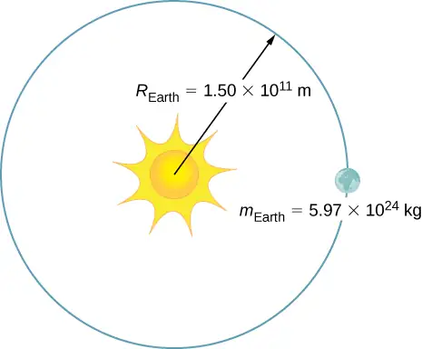
Answer
\(1.78\:\times\:{10}^{29}\:\text{kg}\cdot\text{m/s}\)
22. If a rainstorm drops 1 cm of rain over an area of 10 km2 in the period of 1 hour, what is the momentum of the rain that falls in one second? Assume the terminal velocity of a raindrop is 10 m/s.
23. What is the average momentum of an avalanche that moves a 40-cm-thick layer of snow over an area of 100 m by 500 m over a distance of 1 km down a hill in 5.5 s? Assume a density of 350 kg/m3 for the snow.
Answer
\(1.3\:\times\:{10}^{9}\:\text{kg}\cdot\text{m/s}\)
24. What is the average momentum of a 70.0-kg sprinter who runs the 100-m dash in 9.65 s?
9.2 Impulse and Collisions¶
25. A 75.0-kg person is riding in a car moving at 20.0 m/s when the car runs into a bridge abutment (see the following figure).
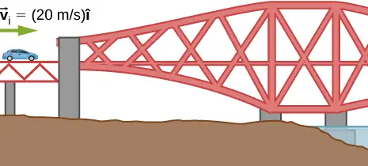
- Calculate the average force on the person if he is stopped by a padded dashboard that compresses an average of 1.00 cm.
- Calculate the average force on the person if he is stopped by an air bag that compresses an average of 15.0 cm.
Answer
a. \(1.50\:\times\:{10}^{6}\:\text{N}\); b. \(1.00\:\times\:{10}^{5}\:\text{N}\)
26. One hazard of space travel is debris left by previous missions. There are several thousand objects orbiting Earth that are large enough to be detected by radar, but there are far greater numbers of very small objects, such as flakes of paint. Calculate the force exerted by a 0.100-mg chip of paint that strikes a spacecraft window at a relative speed of \(4.00\:\times\:{10}^{3}\:\text{m/s}\), given the collision lasts \(6.00\:\times\:{10}^{-8}\:\text{s}\).
27. A cruise ship with a mass of \(1.00\:\times\:{10}^{7}\:\text{kg}\) strikes a pier at a speed of 0.750 m/s. It comes to rest after traveling 6.00 m, damaging the ship, the pier, and the tugboat captain’s finances. Calculate the average force exerted on the pier using the concept of impulse. (Hint: First calculate the time it took to bring the ship to rest, assuming a constant force.)
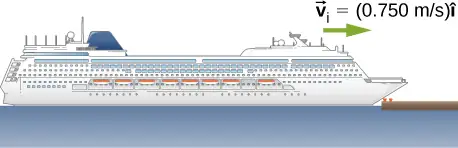
Answer
\(4.69\:\times\:{10}^{5}\:\text{N}\)
28. Calculate the final speed of a 110-kg rugby player who is initially running at 8.00 m/s but collides head-on with a padded goalpost and experiences a backward force of \(1.76\:\times\:{10}^{4}\:\text{N}\) for \(5.50\:\times\:{10}^{-2}\:\text{s}\).
29. Water from a fire hose is directed horizontally against a wall at a rate of 50.0 kg/s and a speed of 42.0 m/s. Calculate the force exerted on the wall, assuming the water’s horizontal momentum is reduced to zero.
Answer
\(2.10\:\times\:{10}^{3}\:\text{N}\)
30. A 0.450-kg hammer is moving horizontally at 7.00 m/s when it strikes a nail and comes to rest after driving the nail 1.00 cm into a board. Assume constant acceleration of the hammer-nail pair.
- Calculate the duration of the impact.
- What was the average force exerted on the nail?
31. What is the momentum (as a function of time) of a 5.0-kg particle moving with a velocity \(\mathbf{\vec{v}}(t)=(2.0\mathbf{\mathbf{\hat{i}}}+4.0t\mathbf{\hat{j}})\:\text{m/s}\)? What is the net force acting on this particle?
Answer
\(\mathbf{\vec{p}}(t)=(10\mathbf{\hat{i}}+20t\mathbf{\hat{j}})\text{kg}\cdot\text{m}\text{/}\text{s}\);\(\mathbf{\vec{F}}=(20\:\text{N})\mathbf{\hat{j}}\)
32. The x-component of a force on a 46-g golf ball by a 7-iron versus time is plotted in the following figure:
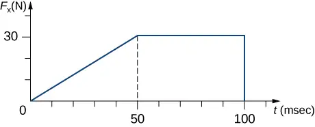
a. Find the x-component of the impulse during the intervals
i. [0, 50 ms], and
ii. [50 ms, 100 ms]
b. Find the change in the x-component of the momentum during the intervals
iii. [0, 50 ms], and
iv. [50 ms, 100 ms]
33. A hockey puck of mass 150 g is sliding due east on a frictionless table with a speed of 10 m/s. Suddenly, a constant force of magnitude 5 N and direction due north is applied to the puck for 1.5 s. Find the north and east components of the momentum at the end of the 1.5-s interval.
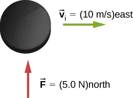
Answer
Let the positive x-axis be in the direction of the original momentum. Then \(p_{x}=1.5\:\text{kg}\cdot\text{m/s}\) and \(p_{y}=7.5\:\text{kg}\cdot\text{m/s}\)
34. A ball of mass 250 g is thrown with an initial velocity of 25 m/s at an angle of \(30{}^{\circ}\) with the horizontal direction. Ignore air resistance. What is the momentum of the ball after 0.2 s? (Do this problem by finding the components of the momentum first, and then constructing the magnitude and direction of the momentum vector from the components.)
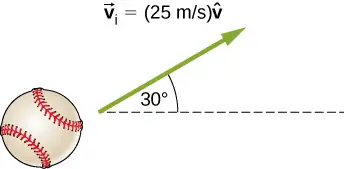
9.3 Conservation of Linear Momentum¶
35. Train cars are coupled together by being bumped into one another. Suppose two loaded train cars are moving toward one another, the first having a mass of \(1.50\:\times\:{10}^{5}\:\text{kg}\) and a velocity of \((0.30\:\text{m/s})\mathbf{\hat{i}}\), and the second having a mass of \(1.10\:\times\:{10}^{5}\:\text{kg}\) and a velocity of \(-(0.12\:\text{m/s})\mathbf{\hat{i}}\). What is their final velocity?
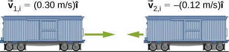
Answer
\((0.122\:\text{m/s})\mathbf{\hat{i}}\)
36. Two identical pucks collide elastically on an air hockey table. Puck 1 was originally at rest; puck 2 has an incoming speed of 6.00 m/s and scatters at an angle of \(30{}^{\circ}\) with respect to its incoming direction. What is the velocity (magnitude and direction) of puck 1 after the collision?
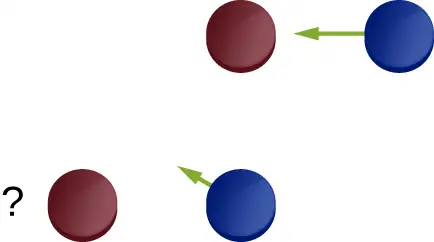
37. The figure below shows a bullet of mass 200 g traveling horizontally towards the east with speed 400 m/s, which strikes a block of mass 1.5 kg that is initially at rest on a frictionless table.
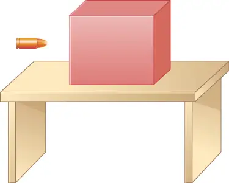
After striking the block, the bullet is embedded in the block and the block and the bullet move together as one unit.
- What is the magnitude and direction of the velocity of the block/bullet combination immediately after the impact?
- What is the magnitude and direction of the impulse by the block on the bullet?
- What is the magnitude and direction of the impulse from the bullet on the block?
- If it took 3 ms for the bullet to change the speed from 400 m/s to the final speed after impact, what is the average force between the block and the bullet during this time?
Answer
a. 47 m/s in the bullet to block direction; b.\(70.6\:\text{N}\cdot\text{s}\), toward the bullet; c. \(70.6\:\text{N}\cdot\text{s}\), toward the block; d. magnitude is \(2.35\:\times\:{10}^{4}\:\text{N}\)
38. A 20-kg child is coasting at 3.3 m/s over flat ground in a 4.0-kg wagon.
- If the child drops a 1-kg ball out the back of the wagon, what is the final speed of the child and wagon?
- If the child drops a 1-kg ball out the back of the wagon so that the ball is at rest relative to the ground, what is the final speed of the child and wagon?
39. A 4.5 kg puffer fish expands to 40% of its mass by taking in water. When the puffer fish is threatened, it releases the water toward the threat to move quickly forward. What is the ratio of the speed of the puffer fish forward to the speed of the expelled water backwards?
Answer
2:5
40. Explain why a cannon recoils when it fires a shell.
41. Two figure skaters are coasting in the same direction, with the leading skater moving at 5.5 m/s and the trailing skating moving at 6.2 m/s. When the trailing skater catches up with the leading skater, he picks her up without applying any horizontal forces on his skates. If the trailing skater is 50% heavier than the 50-kg leading skater, what is their speed after he picks her up?
Answer
5.9 m/s
42. A 2000-kg railway freight car coasts at 4.4 m/s underneath a grain terminal, which dumps grain directly down into the freight car. If the speed of the loaded freight car must not go below 3.0 m/s, what is the maximum mass of grain that it can accept?
9.4 Types of Collisions¶
43. A 5.50-kg bowling ball moving at 9.00 m/s collides with a 0.850-kg bowling pin, which is scattered at an angle of 15.8° to the initial direction of the bowling ball and with a speed of 15.0 m/s.
- Calculate the final velocity (magnitude and direction) of the bowling ball.
- Is the collision elastic?
Answer
a. 6.80 m/s, 5.33°; b. yes (calculate the ratio of the initial and final kinetic energies)
44. Ernest Rutherford (the first New Zealander to be awarded the Nobel Prize in Chemistry) demonstrated that nuclei were very small and dense by scattering helium-4 nuclei from gold-197 nuclei. The energy of the incoming helium nucleus was \(8.00\:\times\:{10}^{-13}\:\text{J}\), and the masses of the helium and gold nuclei were \(6.68\:\times\:{10}^{-27}\:\text{kg}\) and \(3.29\:\times\:{10}^{-25}\:\text{kg}\), respectively (note that their mass ratio is 4 to 197).
a. If a helium nucleus scatters to an angle of \(120{}^{\circ}\) during an elastic collision with a gold nucleus, calculate the helium nucleus’s final speed and the final velocity (magnitude and direction) of the gold nucleus.
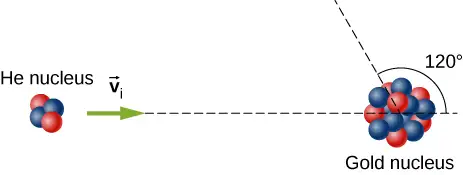
b. What is the final kinetic energy of the helium nucleus?
45. A 90.0-kg ice hockey player hits a 0.150-kg puck, giving the puck a velocity of 45.0 m/s. If both are initially at rest and if the ice is frictionless, how far does the player recoil in the time it takes the puck to reach the goal 15.0 m away?
Answer
2.5 cm
46. A 100-g firecracker is launched vertically into the air and explodes into two pieces at the peak of its trajectory. If a 72-g piece is projected horizontally to the left at 20 m/s, what is the speed and direction of the other piece?
47. In an elastic collision, a 400-kg bumper car collides directly from behind with a second, identical bumper car that is traveling in the same direction. The initial speed of the leading bumper car is 5.60 m/s and that of the trailing car is 6.00 m/s. Assuming that the mass of the drivers is much, much less than that of the bumper cars, what are their final speeds?
Answer
the speed of the leading bumper car is 6.00 m/s and that of the trailing bumper car is 5.60 m/s
48. Repeat the preceding problem if the mass of the leading bumper car is 30.0% greater than that of the trailing bumper car.
49. An alpha particle (4He) undergoes an elastic collision with a stationary uranium nucleus (235U). What percent of the kinetic energy of the alpha particle is transferred to the uranium nucleus? Assume the collision is one-dimensional.
Answer
6.6%
50. You are standing on a very slippery icy surface and throw a 1-kg football horizontally at a speed of 6.7 m/s. What is your velocity when you release the football? Assume your mass is 65 kg.
51. A 35-kg child rides a relatively massless sled down a hill and then coasts along the flat section at the bottom, where a second 35-kg child jumps on the sled as it passes by her. If the speed of the sled is 3.5 m/s before the second child jumps on, what is its speed after she jumps on?
Answer
1.8 m/s
52. A boy sleds down a hill and onto a frictionless ice-covered lake at 10.0 m/s. In the middle of the lake is a 1000-kg boulder. When the sled crashes into the boulder, he is propelled backwards from the boulder. The collision is an elastic collision. If the boy’s mass is 40.0 kg and the sled’s mass is 2.50 kg, what is the speed of the sled and the boulder after the collision?
9.5 Collisions in Multiple Dimensions¶
53. A 0.90-kg falcon is diving at 28.0 m/s at a downward angle of \(35{}^{\circ}\). It catches a 0.325-kg pigeon from behind in midair. What is their combined velocity after impact if the pigeon’s initial velocity was 7.00 m/s directed horizontally? Note that \({\mathbf{\hat{v}}}_{1{,}\text{i}}\) is a unit vector pointing in the direction in which the falcon is initially flying.
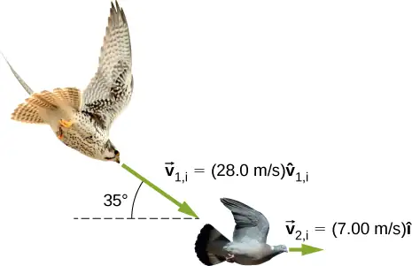
Answer
22.1 m/s at \(32.2{}^{\circ}\) below the horizontal
54. A billiard ball, labeled 1, moving horizontally strikes another billiard ball, labeled 2, at rest. Before impact, ball 1 was moving at a speed of 3.00 m/s, and after impact it is moving at 0.50 m/s at 50° from the original direction. If the two balls have equal masses of 300 g, what is the velocity of the ball 2 after the impact?
55. A projectile of mass 2.0 kg is fired in the air at an angle of 40.0\({}^{\circ}\) to the horizon at a speed of 50.0 m/s. At the highest point in its flight, the projectile breaks into three parts of mass 1.0 kg, 0.7 kg, and 0.3 kg. The 1.0-kg part falls straight down after breakup with an initial speed of 10.0 m/s, the 0.7-kg part moves in the original forward direction, and the 0.3-kg part goes straight up.
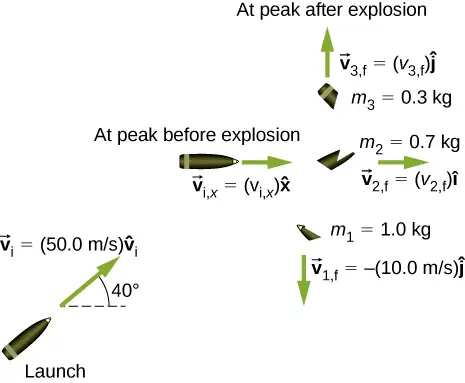
- Find the speeds of the 0.3-kg and 0.7-kg pieces immediately after the break-up.
- How high from the break-up point does the 0.3-kg piece go before coming to rest?
- Where does the 0.7-kg piece land relative to where it was fired from?
Answer
a. 33 m/s and 110 m/s; b. 57 m; c. 480 m
56. Two asteroids collide and stick together. The first asteroid has mass of \(15\:\times\:{10}^{3}\:\text{kg}\) and is initially moving at 770 m/s. The second asteroid has mass of \(20\:\times\:{10}^{3}\:\text{kg}\) and is moving at 1020 m/s. Their initial velocities made an angle of 20° with respect to each other. What is the final speed and direction with respect to the velocity of the first asteroid?
57. A 200-kg rocket in deep space moves with a velocity of \((121\:\text{m/s})\mathbf{\hat{i}}+(38.0\:\text{m/s})\mathbf{\hat{j}}\). Suddenly, it explodes into three pieces, with the first (78 kg) moving at \(-(321\:\text{m/s})\mathbf{\hat{i}}+(228\:\text{m/s})\mathbf{\hat{j}}\) and the second (56 kg) moving at \((16.0\:\text{m/s})\mathbf{\hat{i}}-(88.0\:\text{m/s})\mathbf{\hat{j}}\). Find the velocity of the third piece.
Answer
\((732\:\text{m/s})\mathbf{\hat{i}}+(-79.6\:\text{m/s})\mathbf{\hat{j}}\)
58. A proton traveling at \(3.0\:\times\:{10}^{6}\:\text{m/s}\) scatters elastically from an initially stationary alpha particle and is deflected at an angle of 85° with respect to its initial velocity. Given that the alpha particle has four times the mass of the proton, what percent of its initial kinetic energy does the proton retain after the collision?
59. Three 70-kg deer are standing on a flat 200-kg rock that is on an ice-covered pond. A gunshot goes off and the deer scatter, with deer A running at \((15\:\text{m/s})\mathbf{\hat{i}}+(5.0\:\text{m/s})\mathbf{\hat{j}}\), deer B running at \((-12\:\text{m/s})\mathbf{\hat{i}}+(8.0\:\text{m/s})\mathbf{\hat{j}}\), and deer C running at \((1.2\:\text{m/s})\mathbf{\hat{i}}-(18.0\:\text{m/s})\mathbf{\hat{j}}\). What is the velocity of the rock on which they were standing?
Answer
\(-(1.47\:\text{m/s})\mathbf{\hat{i}}+(1.75\:\text{m/s})\mathbf{\hat{j}}\)
60. A family is skating. The father (75 kg) skates at 8.2 m/s and collides and sticks to the mother (50 kg), who was initially moving at 3.3 m/s and at 45° with respect to the father’s velocity. The pair then collides with their daughter (30 kg), who was stationary, and the three slide off together. What is their final velocity?
61. An oxygen atom (mass 16 u) moving at 733 m/s at 15.0° with respect to the \(\mathbf{\hat{i}}\) direction collides and sticks to an oxygen molecule (mass 32 u) moving at 528 m/s at 128° with respect to the \(\mathbf{\hat{i}}\) direction. The two stick together to form ozone. What is the final velocity of the ozone molecule?
Answer
341 m/s at 86.8° with respect to the \(\mathbf{\hat{i}}\) axis.
62. Two cars of the same mass approach an extremely icy four-way perpendicular intersection. Car A travels northward at 30 m/s and car B is travelling eastward. They collide and stick together, traveling at 28° north of east. What was the initial velocity of car B?
9.6 Center of Mass¶
63. Three point masses are placed at the corners of a triangle as shown in the figure below.
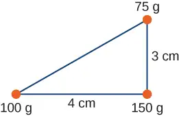
Find the center of mass of the three-mass system.
Answer
With the origin defined to be at the position of the 150-g mass, \(x_{\text{CM}}=-1.23\text{cm}\) and \(y_{\text{CM}}=0.69\text{cm}\)
64. Two particles of masses \(m_{1}\) and \(m_{2}\) separated by a horizontal distance D are released from the same height h at the same time. Find the vertical position of the center of mass of these two particles at a time before the two particles strike the ground. Assume no air resistance.
65. Two particles of masses \(m_{1}\) and \(m_{2}\) separated by a horizontal distance D are let go from the same height h at different times. Particle 1 starts at \(t=0\), and particle 2 is let go at \(t=T\). Find the vertical position of the center of mass at a time before the first particle strikes the ground. Assume no air resistance.
Answer
\(y_{\text{CM}}=\{\begin{array}{c} \frac{h}{2}-\frac{1}{4}gt^{2},\;t \lt T \\ h-\frac{1}{2}gt^{2}-\frac{1}{4}gT^{2}+\frac{1}{2}gtT,\;t\ge T \end{array}\)
66. Two particles of masses \(m_{1}\) and \(m_{2}\) move uniformly in different circles of radii \(R_{1}\) and \(R_{2}\) about origin in the x, y-plane. The x- and y-coordinates of the center of mass and that of particle 1 are given as follows (where length is in meters and t in seconds):
\(x_{1}(t)=4\cos(2t),y_{1}(t)=4\sin(2t)\)
and:
\(x_{\text{CM}}(t)=3\cos(2t),y_{\text{CM}}(t)=3\sin(2t).\)
- Find the radius of the circle in which particle 1 moves.
- Find the x- and y-coordinates of particle 2 and the radius of the circle this particle moves.
67. Two particles of masses \(m_{1}\) and \(m_{2}\) move uniformly in different circles of radii \(R_{1}\) and\(R_{2}\) about the origin in the x, y-plane. The coordinates of the two particles in meters are given as follows (\(z=0\) for both). Here t is in seconds:
\(\begin{array}{ccc} x_{1}(t) & = & 4\:\cos(2t) \\ y_{1}(t) & = & 4\:\sin(2t) \\ x_{2}(t) & = & 2\:\cos\left( 3t-\frac{\pi}{2} \right) \\ y_{2}(t) & = & 2\:\sin\left( 3t-\frac{\pi}{2} \right) \end{array}\)
- Find the radii of the circles of motion of both particles.
- Find the x- and y-coordinates of the center of mass.
- Decide if the center of mass moves in a circle by plotting its trajectory.
Answer
a. \(R_{1}=4\:\text{m}\), \(R_{2}=2\:\text{m}\); b. \(X_{\text{CM}}=\frac{m_{1}x_{1}+m_{2}x_{2}}{m_{1}+m_{2}},Y_{\text{CM}}=\frac{m_{1}y_{1}+m_{2}y_{2}}{m_{1}+m_{2}}\); c. yes, with \(R=\frac{1}{m_{1}+m_{2}}\sqrt{16m_{1}^{2}+4m_{2}^{2}}\)
68. Find the center of mass of a one-meter long rod, made of 50 cm of iron (density \(8\:\frac{\text{g}}{\text{cm}^{3}}\)) and 50 cm of aluminum (density \(2.7\:\frac{\text{g}}{\text{cm}^{3}}\)).
69. Find the center of mass of a rod of length L whose mass density changes from one end to the other quadratically. That is, if the rod is laid out along the x-axis with one end at the origin and the other end at \(x=L\), the density is given by \(\rho(x)=\rho_{0}+(\rho_{1}-\rho_{0}){\left( \frac{x}{L} \right)}^{2}\), where \(\rho_{0}\) and \(\rho_{1}\) are constant values.
Answer
\(x_{cm}=\frac{3}{4}\:L\left( \frac{\rho_{1}+\rho_{0}}{\rho_{1}+2\rho_{0}} \right)\)
70. Find the center of mass of a rectangular block of length a and width b that has a nonuniform density such that when the rectangle is placed in the x,y-plane with one corner at the origin and the block placed in the first quadrant with the two edges along the x- and y-axes, the density is given by\(\rho(x,y)=\rho_{0}x\), where \(\rho_{0}\) is a constant.
71. Find the center of mass of a rectangular material of length a and width b made up of a material of nonuniform density. The density is such that when the rectangle is placed in the xy-plane, the density is given by \(\rho(x,y)=\rho_{0}xy\).
Answer
\(\left( \frac{2a}{3},\frac{2b}{3} \right)\)
72. A cube of side a is cut out of another cube of side b as shown in the figure below.
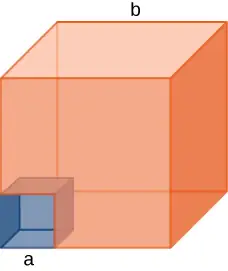
Find the location of the center of mass of the structure. (Hint: Think of the missing part as a negative mass overlapping a positive mass.)
73. Find the center of mass of a cone of uniform density that has a radius R at the base, height h, and mass M. Let the origin be at the center of the base of the cone and have +z going through the cone vertex.
Answer
\((x_{\text{CM}},y_{\text{CM}},z_{\text{CM}})=(0,0,h\text{/}4)\)
74. Find the center of mass of a thin wire of mass m and length L bent in a semicircular shape. Let the origin be at the center of the semicircle and have the wire arc from the +x axis, cross the +y axis, and terminate at the −x axis.
75. Find the center of mass of a uniform thin semicircular plate of radius R. Let the origin be at the center of the semicircle, the plate arc from the +x axis to the −x axis, and the z axis be perpendicular to the plate.
Answer
\((x_{\text{CM}},y_{\text{CM}},z_{\text{CM}})=(0,4R\text{/}(3\pi),0)\)
76. Find the center of mass of a sphere of mass M and radius R and a cylinder of mass m, radius r, and height h arranged as shown below.
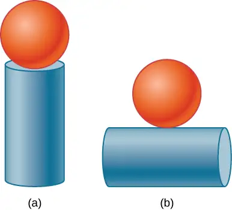
Express your answers in a coordinate system that has the origin at the center of the cylinder.
9.7 Rocket Propulsion¶
77. (a) A 5.00-kg squid initially at rest ejects 0.250 kg of fluid with a velocity of 10.0 m/s. What is the recoil velocity of the squid if the ejection is done in 0.100 s and there is a 5.00-N frictional force opposing the squid’s movement?
(b) How much energy is lost to work done against friction?
Answer
(a) 0.413 m/s, (b) about 0.2 J
78. A rocket takes off from Earth and reaches a speed of 100 m/s in 10.0 s. If the exhaust speed is 1500 m/s and the mass of fuel burned is 100 kg, what was the initial mass of the rocket?
79. Repeat the preceding problem but for a rocket that takes off from a space station, where there is no gravity other than the negligible gravity due to the space station.
Answer
1551 kg
80. How much fuel would be needed for a 1000-kg rocket (this is its mass with no fuel) to take off from Earth and reach 1000 m/s in 30 s? The exhaust speed is 1000 m/s.
81. What exhaust speed is required to accelerate a rocket in deep space from 800 m/s to 1000 m/s in 5.0 s if the total rocket mass is 1200 kg and the rocket only has 50 kg of fuel left?
Answer
4.9 km/s
82. Unreasonable Results Squids have been reported to jump from the ocean and travel 30.0 m (measured horizontally) before re-entering the water.
(a) Calculate the initial speed of the squid if it leaves the water at an angle of 20.0°, assuming negligible lift from the air and negligible air resistance.
(b) The squid propels itself by squirting water. What fraction of its mass would it have to eject in order to achieve the speed found in the previous part? The water is ejected at 12.0 m/s; gravitational force and friction are neglected.
(c) What is unreasonable about the results?
(d) Which premise is unreasonable, or which premises are inconsistent?
Additional Problems¶
83. Two 70-kg canoers paddle in a single, 50-kg canoe. Their paddling moves the canoe at 1.2 m/s with respect to the water, and the river they’re in flows at 4 m/s with respect to the land. What is their momentum with respect to the land?
84. Which has a larger magnitude of momentum: a 3000-kg elephant moving at 40 km/h or a 60-kg cheetah moving at 112 km/h?
Answer
the elephant has a higher momentum
85. A driver applies the brakes and reduces the speed of her car by 20%, without changing the direction in which the car is moving. By how much does the car’s momentum change?
86. You friend claims that momentum is mass multiplied by velocity, so things with more mass have more momentum. Do you agree? Explain.
Answer
Answers may vary. The first clause is true, but the second clause is not true in general because the velocity of an object with small mass may be large enough so that the momentum of the object is greater than that of a larger-mass object with a smaller velocity.
87. Dropping a glass on a cement floor is more likely to break the glass than if it is dropped from the same height on a grass lawn. Explain in terms of the impulse.
88. Your 1500-kg sports car accelerates from 0 to 30 m/s in 10 s. What average force is exerted on it during this acceleration?
Answer
\(4.5\:\times\:{10}^{3}\:\text{N}\)
89. A ball of mass \(m\) is dropped. What is the formula for the impulse exerted on the ball from the instant it is dropped to an arbitrary time \(\tau\) later? Ignore air resistance.
90. Repeat the preceding problem, but including a drag force due to air of \(f_{\text{drag}}=-b\vec{v}.\)
Answer
\(\mathbf{\vec{J}}=\displaystyle \int_{0}^{\tau}[m\vec{g}-m\vec{g}(1-e^{-bt\text{/}m})]dt=\frac{m^{2}}{b}\vec{g}(e^{-b\tau\text{/}m}-1)\)
91. A 5.0-g egg falls from a 90-cm-high counter onto the floor and breaks. What impulse is exerted by the floor on the egg?
92. A car crashes into a large tree that does not move. The car goes from 30 m/s to 0 in 1.3 m. (a) What impulse is applied to the 70 kg driver by the seatbelt, assuming he follows the same motion as the car? (b) What is the average force applied to the driver by the seatbelt?
Answer
a. \(-(2.1\:\times\:{10}^{3}\:\text{kg}\cdot\text{m/s})\mathbf{\hat{i}}\), b. \(-(24\:\times\:{10}^{3}\:\text{N})\mathbf{\hat{i}}\)
93. Two hockey players approach each other head on, each traveling at the same speed \(v_{\text{i}}\). They collide and get tangled together, falling down and moving off at a speed \(v_{\text{i}}\text{/}5\). What is the ratio of their masses?
94. You are coasting on your 10-kg bicycle at 15 m/s and a 5.0-g bug splatters on your helmet. The bug was initially moving at 2.0 m/s in the same direction as you. If your mass is 60 kg, (a) what is the initial momentum of you plus your bicycle? (b) What is the initial momentum of the bug? (c) What is your change in velocity due to the collision with the bug? (d) What would the change in velocity have been if the bug were traveling in the opposite direction?
Answer
a. \((1.1\:\times\:{10}^{3}\:\text{kg}\cdot\text{m/s})\mathbf{\hat{i}}\), b. \((0.010\:\text{kg}\cdot\text{m/s})\mathbf{\hat{i}}\), c. \(-(0.00093\:\text{m/s})\mathbf{\hat{i}}\), d. \(-(0.0012\:\text{m/s})\mathbf{\hat{i}}\)
95. A load of gravel is dumped straight down into a 30 000-kg freight car coasting at 2.2 m/s on a straight section of a railroad. If the freight car’s speed after receiving the gravel is 1.5 m/s, what mass of gravel did it receive?
96. Two carts on a straight track collide head on. The first cart was moving at 3.6 m/s in the positive x direction and the second was moving at 2.4 m/s in the opposite direction. After the collision, the second car continues moving in its initial direction of motion at 0.24 m/s. If the mass of the second car is 5.0 times that of the first, what is the final velocity of the first car?
Answer
\(-(7.2\:\text{m/s})\mathbf{\hat{i}}\)
97. A 100-kg astronaut finds himself separated from his spaceship by 10 m and moving away from the spaceship at 0.1 m/s. To get back to the spaceship, he throws a 10-kg tool bag away from the spaceship at 5.0 m/s. How long will he take to return to the spaceship?
98. Derive the equations giving the final speeds for two objects that collide elastically, with the mass of the objects being \(m_{1}\) and \(m_{2}\) and the initial speeds being \(v_{\text{1,i}}\) and \(v_{\text{2,i}}=0\) (i.e., second object is initially stationary).
Answer
\(v_{\text{1,f}}=v_{\text{1,i}}\frac{m_{1}-m_{2}}{m_{1}+m_{2}},\:v_{\text{2,f}}=v_{\text{1,i}}\frac{2m_{1}}{m_{1}+m_{2}}\)
99. Repeat the preceding problem for the case when the initial speed of the second object is nonzero.
100. A child sleds down a hill and collides at 5.6 m/s into a stationary sled that is identical to his. The child is launched forward at the same speed, leaving behind the two sleds that lock together and slide forward more slowly. What is the speed of the two sleds after this collision?
Answer
2.8 m/s
101. For the preceding problem, find the final speed of each sled for the case of an elastic collision.
102. A 90-kg football player jumps vertically into the air to catch a 0.50-kg football that is thrown essentially horizontally at him at 17 m/s. What is his horizontal speed after catching the ball?
Answer
0.094 m/s
103. Three skydivers are plummeting earthward. They are initially holding onto each other, but then push apart. Two skydivers of mass 70 and 80 kg gain horizontal velocities of 1.2 m/s east and 1.4 m/s southeast, respectively. What is the horizontal velocity of the third skydiver, whose mass is 55 kg?
104. Two billiard balls are at rest and touching each other on a pool table. The cue ball travels at 3.8 m/s along the line of symmetry between these balls and strikes them simultaneously. If the collision is elastic, what is the velocity of the three balls after the collision?
Answer
final velocity of cue ball is \(-(0.76\:\text{m/s})\mathbf{\hat{i}}\), final velocities of the other two balls are 2.6 m/s at ±30° with respect to the initial velocity of the cue ball
105. A billiard ball traveling at \((2.2\:\text{m/s})\mathbf{\hat{i}}-(0.4\:\text{m/s})\mathbf{\hat{j}}\) collides with a wall that is aligned in the \(\mathbf{\hat{j}}\) direction. Assuming the collision is elastic, what is the final velocity of the ball?
106. Two identical billiard balls collide. The first one is initially traveling at \((2.2\:\text{m/s})\mathbf{\hat{i}}-(0.4\:\text{m/s})\mathbf{\hat{j}}\) and the second one at \(-(1.4\:\text{m/s})\mathbf{\hat{i}}+(2.4\:\text{m/s})\mathbf{\hat{j}}\). Suppose they collide when the center of ball 1 is at the origin and the center of ball 2 is at the point \((2R,0)\) where R is the radius of the balls. What is the final velocity of each ball?
Answer
ball 1: \(-(1.4\:\text{m/s})\mathbf{\hat{i}}-(0.4\:\text{m/s})\mathbf{\hat{j}}\), ball 2: \((2.2\:\text{m/s})\mathbf{\hat{i}}+(2.4\:\text{m/s})\mathbf{\hat{j}}\)
107. Repeat the preceding problem if the balls collide when the center of ball 1 is at the origin and the center of ball 2 is at the point \((0,2R)\).
108. Repeat the preceding problem if the balls collide when the center of ball 1 is at the origin and the center of ball 2 is at the point \(\left( \sqrt{3}R\text{/}2,R\text{/}2 \right)\)
Answer
ball 1: \((1.4\:\text{m/s})\mathbf{\hat{i}}-(1.7\:\text{m/s})\mathbf{\hat{j}}\), ball 2: \(-(2.8\:\text{m/s})\mathbf{\hat{i}}+(0.012\:\text{m/s})\mathbf{\hat{j}}\)
109. Where is the center of mass of a semicircular wire of radius R that is centered on the origin, begins and ends on the x axis, and lies in the x,y plane?
110. Where is the center of mass of a slice of pizza that was cut into eight equal slices? Assume the origin is at the apex of the slice and measure angles with respect to an edge of the slice. The radius of the pizza is R.
Answer
\(\theta_{\text{cm}}=\frac{1}{8}{,}r_{\text{cm}}=\frac{8R}{3\pi}\sqrt{2-\sqrt{2}}\)
111. If 1% of the Earth’s mass were transferred to the Moon, how far would the center of mass of the Earth-Moon-population system move? The mass of the Earth is \(5.97\:\times\:{10}^{24}\text{kg}\) and that of the Moon is \(7.34\:\times\:{10}^{22}\text{kg}\). The radius of the Moon’s orbit is about \(3.84\:\times\:{10}^{5}\text{m}\).
112. You friend wonders how a rocket continues to climb into the sky once it is sufficiently high above the surface of Earth so that its expelled gasses no longer push on the surface. How do you respond?
Answer
Answers may vary. The rocket is propelled forward not by the gasses pushing against the surface of Earth, but by conservation of momentum. The momentum of the gas being expelled out the back of the rocket must be compensated by an increase in the forward momentum of the rocket.
113. To increase the acceleration of a rocket, should you throw rocks out of the front window of the rocket or out of the back window?
Challenge¶
114. A 65-kg person jumps from the first floor window of a burning building and lands almost vertically on the ground with a horizontal velocity of 3 m/s and vertical velocity of \(-9\:\text{m/s}\). Upon impact with the ground he is brought to rest in a short time. The force experienced by his feet depends on whether he keeps his knees stiff or bends them. Find the force on his feet in each case.
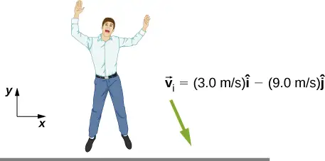
- First find the impulse on the person from the impact on the ground. Calculate both its magnitude and direction.
- Find the average force on the feet if the person keeps his leg stiff and straight and his center of mass drops by only 1 cm vertically and 1 cm horizontally during the impact.
- Find the average force on the feet if the person bends his legs throughout the impact so that his center of mass drops by 50 cm vertically and 5 cm horizontally during the impact.
- Compare the results of part (b) and (c), and draw conclusions about which way is better.
You will need to find the time the impact lasts by making reasonable assumptions about the acceleration opposite to the motion. Although the force is not constant during the impact, working with constant average force for this problem is acceptable.
Answer
a. \(617\:\text{N}\cdot\text{s}\), 108°; b. \(F_{x}=2.91\:\times\:{10}^{4}\:\text{N}\), \(F_{y}=2.6\:\times\:{10}^{5}\:\text{N}\); c. \(F_{x}=5850\:\text{N}\), \(F_{y}=5265\:\text{N}\)
115. Two projectiles of mass \(m_{1}\) and \(m_{2}\) are fired at the same speed but in opposite directions from two launch sites separated by a distance D. They both reach the same spot in their highest point and strike there. As a result of the impact they stick together and move as a single body afterwards. Find the place they will land.
116. Two identical objects (such as billiard balls) have a one-dimensional collision in which one is initially motionless. After the collision, the moving object is stationary and the other moves with the same speed as the other originally had. Show that both momentum and kinetic energy are conserved.
Answer
Conservation of momentum demands \(m_{1}v_{\text{1,i}}+m_{2}v_{\text{2,i}}=m_{1}v_{\text{1,f}}+m_{2}v_{\text{2,f}}\). We are given that \(m_{1}=m_{2}\), \(v_{\text{1,i}}=v_{\text{2,f}}\), and \(v_{\text{2,i}}=v_{\text{1,f}}=0\). Combining these equations with the equation given by conservation of momentum gives \(v_{\text{1,i}}=v_{\text{1,i}}\), which is true, so conservation of momentum is satisfied. Conservation of energy demands \(\frac{1}{2}m_{1}v_{\text{1,i}}^{2}+\frac{1}{2}m_{2}v_{\text{2,i}}^{2}=\frac{1}{2}m_{1}v_{\text{1,f}}^{2}+\frac{1}{2}m_{2}v_{\text{2,f}}^{2}\). Again combining this equation with the conditions given above give \(v_{\text{1,i}}=v_{\text{1,i}}\), so conservation of energy is satisfied.
117. A ramp of mass M is at rest on a horizontal surface. A small cart of mass m is placed at the top of the ramp and released.
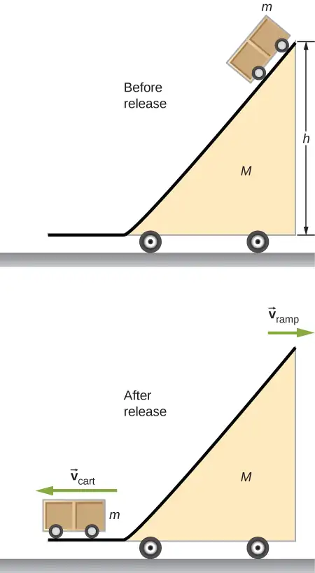
What are the velocities of the ramp and the cart relative to the ground at the instant the cart leaves the ramp?
118. Find the center of mass of the structure given in the figure below. Assume a uniform thickness of 20 cm, and a uniform density of \(1{\:\text{g/cm}}^{3}.\)
![A diagram of several masses arranged to look like a model of a person is shown. At the top is a sphere, radius 8 cm. Centered below it is a rectangle 25 cm wide horizontally and 60 cm tall that looks like the body of the person. On either side of the rectangle are rectangles measuring 60 cm horizontally and 5 cm tall that look like the outstretched arms. The tops or the arms are aligned with the top of the body, and each arm extends out from the sides of the body horizontally. At the end of each arm is a 5 cm wide square. Below the body are the legs. Each leg is 70 cm tall and 8 cm wide. The tops of the legs are aligned with the bottom of the body. The outer sides of the legs are aligned with the sides o the body. Below each leg are the feet, which are 3 cm tall and 15 cm wide. The inner side of each foot is aligned with the inner side of the leg above it.](img/cnx-uphysics-09-06-cprob1-img.webp)
Answer
Assume origin on centerline and at floor, then \((x_{\text{CM}},y_{\text{CM}})=(0,86\:\text{cm})\)
Adapted from University Physics Volume 1 by OpenStax, licensed under CC BY 4.0. Access the original for free at openstax.org. Changes: converted to the web reading format of The Open Book Project.